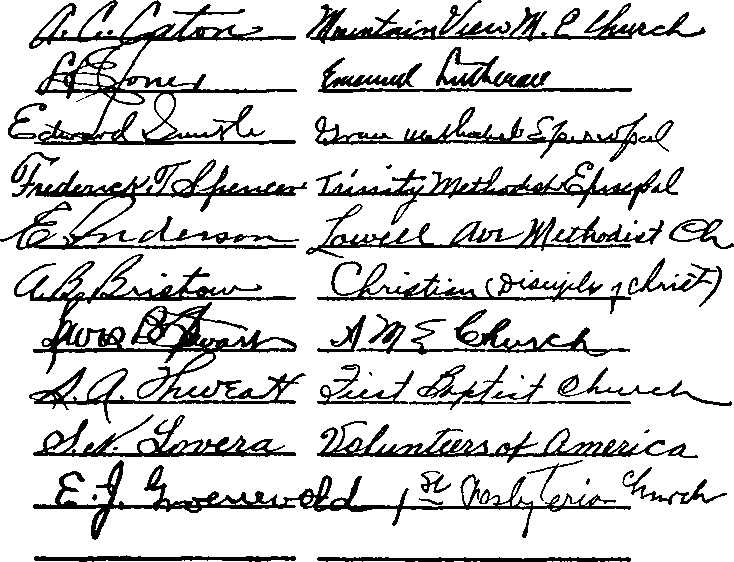
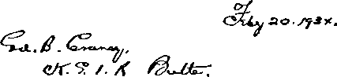
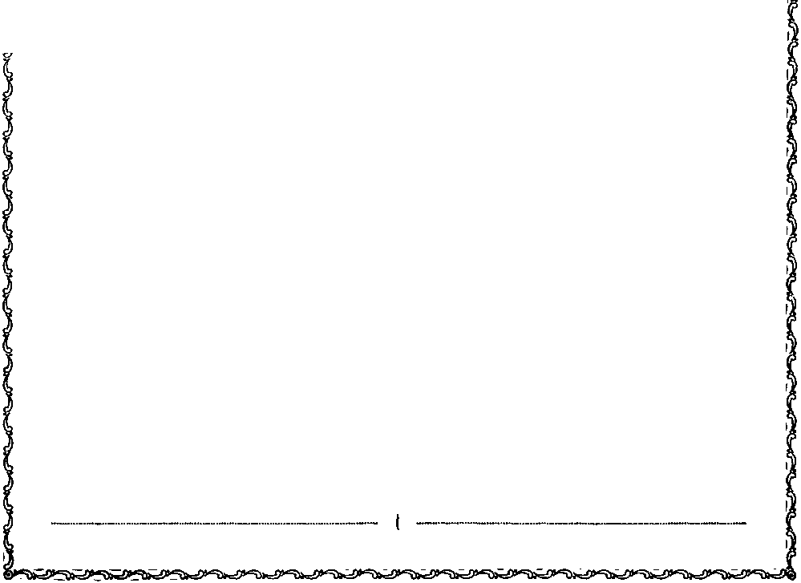

iiiiiiiimmiiiiiiiiiiiimiimmiiiiiimiiiiimiiimiiiiimiiiiiiiiiiii
in this issue
FAMINE
Full text of lecture by Judge Rutherford broadcast over chain June 17, 1934
iiiiiiiiiiiiiiiiiiiiuiiiiiiiiiiiiiiiimiiiiiiiiiiiiiiiiiimiiiiiiiiiiiiiiini
every other WEDNESDAY five cents a copy one dollar a year
Canada & Foreign 1.25
Vol. XV - No. 386 July 4, 1934
•• cXq) • — 1 " H — — — • (gXj
CONTENTS
LABOR AND ECONOMICS
Famine Conditions in North Am erica......Gil
SOCIAL AND EDUCATIONAL
Distortion of a Beautiful Truth . 636
Jonesboro Murderer Acquitted . 637
FINANCE—COMMERCE—TRANSPORTATION
"Religion” for Sale at 2% Gross . 637
POLITICAL—DOMESTIC AND FOREIGN
Radio Hearings Before the Commerce Committee . . . 617 Congressman McFadden s
Statement.......617
Statement of Jehovah’s witnesses 618
Federal Radio Commission . . 618
Roman Catholic Hierarchy . . 620
Chain Broadcasting Systems . 621 Facts About National Catholic
Welfare Conference . . . 622
“Resolutions”......624
Attempt to Cover Their Trades (?) 626 “The Plea for Tolerance” . . 626
Use of Boycott Methods to Intimidate Radio Stations . 627
Collusion Between Hierarchy and
Federal Radio Commission' . 628
Truth About Signatures to the Petition
Jailed for Circulating Petition . 628
Affidavits of Boycotting Operations
Coercive Practices of Catholic
Execution of Jehovah’s Judgments 629
Boycott Operations in Minnesota 630
Operation of Boycott in Ohio . 630
Coercion by Telegraph . . . 630
Huge, Conscienceless Racket . 630
Investigation Recommended . 631
An Affidavit That Died
for Want of Courage . . . 631
A Catholic of Fine Public Spirit 633
SCIENCE AND INVENTION
Earth Gradually Growing Warmer 616
HOME AND HEALTH
Want to Kill Your Dog ? . , . 639
TRAVEL AND MISCELLANY
“Queer Meeting” in Indiana . , 636 “The Holiest of the Holy” . . 637 Better Never to Have Known , . 637
RELIGION AND PHILOSOPHY
Can You Spare $5 or $10? . . 633
“The Vicar of Christ” . . . 634
British Protest Against Injustices
to Jehovah’s witnesses in Germany 636
The Happy “Millionaire” . . . 636
Gestures of Tolerance in Plainfield 637
The Carillon at Plainfield . . . 637
Food Rejected When Supplied . 637
The Ability to Snivel Well . . , 637
Redemption........639
• • • ■———---• (2*0 • •
Published every other Wednesday by
GOLDEN AGE PUBLISHING COMPANY, INC.
117 Adams Street, Brooklyn, N. Y., U. S. A.
Clayton J. Woodworth President Nathan H. Knorr Vice President
Charles E. Wagner Secretary and Treasurer
FBE CENTS A COPY
§1 a year, United States; $1.25 to Canada and all other countries.
Notice to Subscribers remittances : For your own satety, remit by postal or express money order. When coin or currency is lo.-t in the ordinary mails, there is no ledress. Remittances from countries other than those named below may be made to the Brooklyn office, but only by international postal money order.
receipt of a new or renewal subscription Mill be acknowledged only when lequested. notice of expiration is sent with the journal one month befoie subscription expires. Please renew promptly to avoid loss of copies,
change of address : Subscribers will please notify this office of change of address at least two weeks in advance.
Pl bushed also in Danish, Dutch. Esperanto, Finnish, French. German, Greek. Japanese, Norwegian, Polish, Slovak, Spanish, Swedish.
Offices for Other Countries
British........34 Craven Terrace, London, W. 2, England
Canadian ....... 40 Irwin Avenue, Toronto 5, Ontario, Canada Australasian .... 7 Beresford Road, Strathfield, N. S. W., Australia South African ....... Boston House, Cape Town, South Africa Entered as second-class matter at Brooklyn, N. Y., under the Act of March 3, 1S79.
—--1---------■--•Qh’-
Volume XV Brooklyn, N. Y., Wednesday, July 4, 1934 Number 386
Chain broadcast from Brooklyn, Sunday, June 17, 1934, by Judge Rutherford
FOR some time the American people have heard of famines and pestilences that have devastated foreign lands. Now these hideous monsters of famine and pestilence threaten this continent, and even today much of North American territory has become a veritable waste. The long period of economic depression is still upon the country. Added to this, in many of the states and in the provinces of Canada there is almost a total failure of crops, pastures are dead, and cattle are dying from starvation. The small amount of vegetation that has survived the burning rays of the sun and the destructive winds has been quickly devoured by the pest of grasshoppers. Vast fields that once blossomed and produced an abundance of food for man and beast are now a desert waste.
America has never experienced a real famine, but that this country is now threatened by famine and pestilence there is not the slightest doubt. Millions of people are in dire distress and great perplexity, as indeed they have cause to be. With the greatest concern and anxiety many are now asking, Who is blamable for these perils ? Others are saying, This is supposed to be a Christian land, and why should a just God permit famines and pestilences to afflict this land, where the people have always enjoyed the freedom of worship of Almighty God ? Seeking an answer to their own inquiries, some charge that the present administration at Washington is responsible for the threatened disaster. Others charge that Almighty God has brought the suffering and distress upon the people by famine and pestilence as a punishment for their derelictions. Others hold that, because at the beginning of his administration the president stated that he trusted in divine guidance for the administration of public affairs, the result now shows that God has guided the president and led him and the people into the present great distress and suffering; hence that Mr. Roosevelt and God are responsible therefor, and that the famine and pestilence now threatening is a direct punishment from God because of an unwise course taken. The New York American on the 5th of June published this statement: “Already some critics of the pigkilling and bread-reducing acreage are wondering whether this drought is not God’s punishment for the destruction of foods when so many people are out of work.”
It is good for Americans to pause and reflect, at this Juncture, that the life of every one of us is in the hollow of God's hand, and not in the NRA, the AAA, the CWA, or any other of the multitudinous remedies for earth’s ills that flow so readily out over the radio, through legls* lation, and through the press.
Kindly, but plainly, In this address Judge Rutherford brings his hearers back from the labyrinth of human schemes and speculations to the consideration of some homely truths about food supplies and conservation that proved their worth centuries before any of us were born.
The interest that God has or could have in a famine Is something of vital concern to all of us who find it to our own person* al interest, convenience and necessity to come to our tables three times a day to feast upon the bounties which He provides. Is this famine from Him?
As you read this report of Judge Rutherford's lecture, see the Inescapable logic with which he reveals God’s kingdom as the only hope of the world, and His Word as the only safe guide in the maelstrom of perplexities midst which we whirl. —Ed.
Famine and pestilence are terrible scourges and entail upon the people indescribable suffering, and it would be very wrong to charge anyone with responsibility for such calamities unless the evidence in support of such charge is clear and convincing beyond a reasonable doubt. To magnify the mistakes or derelictions of men is not my purpose, nor would I indulge in the
idle hope of influencing public officials to change their way in the administration of governmental affairs. My purpose is to bring to the attention of the common people the indisputable facts, that they may see the real cause of the distress on earth and then that they may find the only possible way for security and safety and, above all, that they might have a proper conception of Jehovah, the great Almighty God.
It is one thing to say, “I trust in divine guidance,” and still a far different thing to be guided by the divine Almighty God. If a high official surrounds himself with men who are wise in the wisdom of this world, even if those men are properly designated “the brain trust”, and if he is guided by their counsel, it is certain that he is not being guided by divine wisdom. In the Scriptures it is written: “Hath not God made foolish the wisdom of this world?” Again says Jehovah, at Psalm 146: “Put not your trust in princes, nor in the son of man, in whom there is no help.” And again say the Scriptures: “Trust in the Lord with all thine heart; and lean not unto thine own understanding. In all thy ways acknowledge him, and he shall direct thy paths.” —Proverbs 3: 5, 6.
Jehovah God has put in the Bible, which is His Word, the true guide for man who seeks divine guidance, and the only possible way to have such guidance is to know, rely upon and follow the Word of God; as it is written, in Psalm 119: “Thy word is a lamp unto my feet, and a light unto my path.” Furthermore the Scriptures declare: ‘The law of God is perfect; the testimony of Jehovah is sure, making wise the teachable.’ (Psalm 19) Men who have no faith in the Word of Jehovah God, and who ignore His Word and pursue a course according to human wisdom, are unsafe counselors. No man can disregard the Word of Jehovah as it is written in the Scriptures and expect to be divinely guided.—Proverbs 1: 25-33.
In a sincere effort to pull the country out of a great economic depression the NBA was brought into existence. Is the NRA of divine origin? Under it provision is made for reducing the production of wheat and corn, and for the destruction of domestic animals, in order to enhance the commercial value of that which remains; and could that be the result of divine guidance? The divine Word, by which He guides those who trust Him, gives a thundering answer, NO. Then it must follow that the “recovery act”, so called, is the result of human wisdom.
Jehovah God does not change at any time; hence if He would guide men in one instance in the restriction of the production of food, and in the destruction of animals, to enhance the value of that which is not destroyed, He would do so on another occasion. As an example, Diocletian, the emperor of Pagan Rome, put in operation an economic system similar to the NRA. About the year 300 he issued an edict regulating wages and the price of goods, decreed the destruction of one-third of the vineyards, reduced the production of food and fixed the price thereof, taxed the people to the limit, and punished the violators of his edict with death and, says The Encyclopedia Americana: “The result thereof was disaster.” It is certain that Jehovah God did not guide Diocletian, because he was a heathen who practiced the Devil religion, and who viciously persecuted Christians; and he having no faith in Jehovah God, and opposing Him, certainly God would not guide him.— Malachi 3:6; Psalm 25: 9,10.
The Catholic press has repeatedly published the claim that the principles of the NRA originated with the pope, who resides at Vatican City, near Rome, and the implied conclusion is that the people should accept the NRA as coming from the Lord. There is not the slightest evidence that it is in accord with the Word of Jehovah God. The fact that an old and strong religious organization advocates the same is no evidence whatsoever that it has Jehovah God’s approval.
The greatest of all international famines that afflicted the entire earth, for seven years, was during the time when Joseph was ruler in Egypt. The Scriptural evidence is clear and convincing that Jehovah God did guide and approve Joseph. (Hebrews 11:22) The Bible record at Genesis shows that Joseph, acting upon specific instructions from Jehovah God, and being warned of the approaching famine, increased the production of food and during the plenteous years stored it up in the granaries, and by this means the people from all parts of the earth, during the famine, were fed. (Genesis, chapters 41 to 47) This record of divine guidance is exactly contrary to the practice of paying the farmers to let their fields lie idle and to kill their pigs in order to enhance the price of that which remains.
Furthermore, the destruction of animals good for food, merely for the purpose of enhancing the price of that which is retained, is a direct violation of God’s everlasting covenant, as recorded in the ninth chapter of Genesis, and for the breaking of which God declares, at Isaiah 24, He will hold men and nations responsible.
To tax one class of people to raise money and use it to pay the farmers to refrain from raising foodstuffs and to let their lands go untilled and grow up in weeds and thistles, begets idleness, slothfulness and wastefulness. Idleness and slothfulness breed crime. Such a course could not be according to the divine will, because it is written in the divine Word that ‘man must earn his bread by the sweat of his face’; and God condemns idleness and slothfulness, as it is written (Proverbs 18: 9): “He also that is slothful in his work is brother to him that is a great waster.” Divine wisdom and guidance must be in harmony with God’s Word, and such guidance would encourage the people to produce all the food possible and store the surplus against an evil day, such as the world is now experiencing.
The question then is propounded: Is Mr. Roosevelt, the president of the United States, properly chargeable with the responsibility for the threatened famine in the land ? Emphatically, No. It would be a great wrong to charge the president of the United States with the responsibility for such a thing. The threatened famine and pestilence is due to a lack of rainfall, the scorching hot winds, and numerous pests. That calamity would have come just the same, regardless of who was president of the United States; and it cannot be charged to any political party. To charge it to the mistakes of men would be doing a great injustice to ourselves, as well as to others. What I have said about the reduction of crops and the destruction of animals is stated for the purpose of showing the people that such a course has not been taken under the guidance of Jehovah God, and this statement is made particularly to put in their minds the proper conception of the Most High God.
W’hat evil could possibly result by reason of the chief executive in the land claiming to have divine guidance and then not being guided divinely? Just this: Millions of people in the United States have put their trust in a man and, being induced to believe that he was being guided by the Almighty, they have eagerly subscribed to such things as the NRA, trusting therein to bring them out of their depression; and when it is demonstrated that the NRA is a failure, and that the acts performed thereunder have been attended with disaster and suffering, the people at once are inclined to lose confidence not only in man but in Jehovah God, because they believe that God has led the ruler in the way that has brought grief upon them. Such a result is the very thing that the adversary of Jehovah God would desire.—Jeremiah 17: 5, 6; Psalm 118: 8, 9.
But is it not true, as the professional religionists now claim, that God is responsible for the lack of rainfall, and that He has sent the drought and the pestilence upon the people as a punishment, and that therefore God is responsible for the threatened famine? I answer, most emphatically, NO. Jehovah the Almighty God is in no wise responsible for the present threatened famine, nor has He sent the pestilence and distress upon the peoples of the world as a punishment at this time. When Jehovah purposes to punish the people He always gives full and fair warning beforehand, that the people who trust Him may seek a place of protection and safety. (1 Kings 17:1-8; Ezekiel 3:17-21; Exodus 9:18-26) Furthermore, in some portions of North America the rainfall has been abundant and the crops are in fairly good shape, while in other parts of the land they are devastated. The people in one part of the land are no better than those in the other part, and are no worse. The rains fall upon the just and the unjust; and concerning this it is written in the Scriptures: “Your Father which is in heaven . . . maketh his sun to rise on the evil and on the good, and sendeth rain on the just and on the unjust.”— Matthew 5:45.
One of the great mistakes made by men who have attempted to rule the people and to bring prosperity to them is this: They have relied upon professional religious leaders to guide them as to spiritual things and have disregarded the Word of God. Professional religious leaders stand before the legislative bodies, and in a form of words invoke the divine blessing upon the nation; but both the speakers and the hearers of those words give no heed or consideration to divine instruction set forth in the Bible. It could not be expected that God would answer prayers of those who ignore His instruction. Political leaders are blind to God’s Word because they have not tried to understand it. Professional religious leaders are blind to God’s Word and purpose because they have relied upon human traditions and the teachings of an organization. (Matthew 15:7-9; Jeremiah 23: 18-22; Proverbs 1: 28-30) The people have been kept in ignorance of Jehovah’s purpose because they have been prevented from learning the truth of God’s Word. Now as an aid to the common people in this hour of perplexity, the warning is again sounded that the only sane and safe course to take is to disregard the theories of men and to learn and rely upon the Word of God. Since 1914 events have rapidly come to pass, which events, in the light of God’s Word, should fully convince thoughtful persons that there is a mighty change now taking place and that the only hope for the people is in the kingdom of Jehovah God, which is now at hand.—Matthew 24:3-31; Luke 21:28-33.
Who, then, is responsible for the threatened famine and for the pestilences that now are devastating the land of this country and bringing great distress and perplexity upon the people ? The Scriptural answer is that the one responsible therefor is God’s great adversary, the Deceiver, and man’s worst enemy, who is Satan the Devil. If now you will give heed I will prove this statement to the entire satisfaction of every man who really believes in divine guidance.
The Bible is an inexhaustible storehouse of knowledge, given for the instruction of everyone who desires to be guided by divine wisdom. (2 Timothy 3:16,17) That divine record contains a superabundance of testimony proving that centuries ago Satan the Devil rebelled against Jehovah God and challenged God to put on earth men who would be faithful and true to Jehovah, Satan claiming that he could induce all men to turn away from and curse God. That challenge was accepted in order to afford an opportunity to demonstrate to all creation the supremacy of God, and in order to prove in due time that Satan’s boastful challenge is entirely wrong. Therefore to Satan God said, as recorded in Exodus nine: “For this cause have I allowed thee to remain, in order to show thee my power; and in order that they [my witnesses] may proclaim my name throughout all the earth.” (Exodus 9:16, Leeser) God fixed the time limit in which Satan would be permitted, without hindrance, to prove his boastful challenge, and which time limit marks the end of Satan’s world; and that time is now here. In that long period of waiting God has permitted men to choose to either obey His Word or to follow their own devices and to fall into the snares set by Satan. That Satan the Devil is a mighty spirit creature with power to produce storms, hurricanes, floods, famines and pestilences, is abundantly proved by the Scriptures, particularly at the book of Job, and in many other places. (Job 1:12-19; Acts 27:14-44; Revelation 12:12) It was Satan who raised the storm on the sea of Galilee for the express purpose of bringing about the destruction of Jesus and His faithful associates. (Matthew 8:24) When on earth Jesus spoke a prophecy in which He declared that Satan’s time limit to rule unhindered would be marked by a world war, in which nation would rise against nation, and kingdom against kingdom. In fulfilment of that prophecy Satan plunged the nations of “Christendom” into the wmr of 1914. God was not responsible for that war. That war, said Jesus, would mark the beginning of great sorrows upon the peoples of earth. Everybody can testify that from 1914 to this day the sorrows upon the nations have continued to increase. Among the sorrows to befall the world Jesus, in that great prophecy, said: Tn divers places there shall be famines, pestilences and terrors; and upon earth distress of nations, with perplexity, men’s hearts failing them for fear of what they see coming upon the earth.’ (Luke 21:11,25,26, R.V.) Satan has brought such sorrows upon the world since 1918, and many nations are now afflicted thereby. Why, then, ignore these facts and the Scriptures ? and why follow the wisdom of imperfect men? Why not be diligent to ascertain the reason for these calamities, be guided by divine wisdom, and learn what course to take and what will be the result?
If you would learn the real cause for these famines and distresses take your Bible now and turn to the eleventh chapter of Revelation and there read these words, to wit: ‘We thank thee, Lord God Almighty, that thou hast taken unto thee thy great power and reigned. And the nations were angry.’ The facts mark 1914 as the date of the fulfilment of that great prophecy, when the World War began. At the same time there was a war in heaven between Christ and the Devil, resulting in the casting of the Devil down to the earth. The Lord gives specific warning to the peoples of the earth in these words: “Woe to the inhabiters of the earth, and of the sea! for the devil is come down unto you, having great wrath, because he knoweth that he hath but a short time.” (Revelation 12:12) Here is the positive and indisputable evidence that the Devil is responsible for bringing all these woes upon the peoples of the earth at the present time.
With propriety you ask, Why should the Devil want to bring these great woes upon the people? The Scriptural answer is that for centuries Satan has been endeavoring to turn all men away from God in order to prove his own wicked challenge, and Satan would prefer to see the whole world perish rather than that any man should faithfully serve Jehovah God. He knows that his time is short till the great battle of Armageddon, which will be the decisive conflict between wickedness and righteousness; and within that short time the Devil endeavors to cause all men to curse God and die. The Devil is a subtle and wily foe, and to accomplish his purposes he resorts to all manner of fraud and deception, thereby overreaching men who have good intentions but who follow human devices and avoid divine instruction.—2 Corinthians 2:11; 11:13-15; 2 Thessalonians 2:9; Revelation 12:9.
At Proverbs 29 it is written: 'Where there is no vision, the people perish.” The absence of an understanding or vision of God’s expressed purpose lays the people open to the deceptions of Satan, and following in the blind lead of human wisdom the people come into great grief. Therefore knowledge and understanding of God’s Word is now of greatest importance. In that same chapter of Proverbs it is written: “The fear of man bringeth a snare; but whoso putteth his trust in Jehovah shall be safe.” The president, even though with the most sincere desire to aid the people, has permitted himself to be led, not by the divine Word, but, in economic matters, by the counsel of worldly philosophers, and in spiritual matters by worldly ecclesiastics. Acting upon this unsound counsel he launched the human scheme of recovery, ignoring the Scriptural reason as to why this depression is upon the world. Congressmen have feared to oppose the scheme, and hence have blindly supported it. The people put their trust in the president because they believe in his claim of divine guidance, and the people have feared to take any other course than to rely upon the NRA, and the result is that all have fallen into the snare. Whose snare? Not the snare of any man; but they have fallen into the snare of Satan the Devil, who subtly entraps men in this time of peril. The Scriptures, at 2 Timothy 3, specifically point out that this is a time of peril and mark out what shall come to pass.
If the ecclesiastics or religious leaders know what is in the divine Word, their fear has caused them to avoid telling it. Had they believed and trusted God’s Word they would have told the officials and the peoples of America, and would tell them now, that the threatened famine and the pestilence and the distress and perplexity and the terrors upon the world have not come by reason of the fault of the president, or any of his official family, nor because of the derelictions of any other political party; that they have not come upon the peoples as a punishment from God, but that they have come by reason of the fact that Satan the Devil is now attempting to turn all people away from God and drive them into destruction. These plain truths are now told as a warning and for the benefit of the people, and are certainly of the greatest public convenience and necessity at the present time.
Regardless of the honesty and good intentions of men to bring prosperity to the people by such means as the NRA, all such human schemes are doomed to certain failure. When the people are induced to believe that these human schemes of recovery have divine guidance, and when these schemes do fail, then millions of people who have heretofore thought they were Christians, and who have put their trust in men, will lose all faith in men and in God, and will say: “If God permits such calamities to come upon us and will not help us, then we do not wish to have Him for our God.” That is exactly what the Devil expects to accomplish. That fact has already been accomplished in Russia and in Germany, where infidelity holds sway.
What, then, is the hope for the people? Jehovah God, at Matthew 12, gives answer to that question in these words: “Behold my servant [Christ Jesus], whom I have chosen; my beloved, in whom my soul is well pleased: I have put my spirit upon him, and he shall show [justice] to the [nations]. . . . And in his name shall the [nations] trust.” Armageddon will mark the complete end of Satan’s rule of the world. Why should the people put their trust in Christ Jesus and His kingdom? The answer from God’s Word is this, that Armageddon will demonstrate to all creation that Jehovah is the allwise, just and loving God, and that His government for mankind, established with Christ Jesus as the invisible head thereof, will bring to pass that which righteous men have long desired. At Armageddon, which is but a short time in the future, Christ Jesus will completely rid the earth of all wickedness. Then the people will be rid of oppressors and oppression, and that will mark the end of sorrows, distress and perplexities. Wars will cease, and peace and prosperity will come to stay. Concerning this it is written in God's Word, that Christ is King and the government shall be upon His shoulder; His name shall be called Wonderful Counselor, the Mighty God, the Everlasting Father, and the Prince of Peace; and of the increase of His government and peace there shall be no end.— Psalm 2:6; Isaiah 9: 6, 7.
What could be of such great interest to the people as to know now these truths and to know that in the near future God’s righteous government shall take charge of the affairs of earth? Who would be attempting to keep the people in ignorance concerning that great kingdom ? Only Satan and those whom he can use. It ought to be apparent to all persons who think that those opposing the proclamation of this message from God’s Word are being used as instruments of Satan to accomplish his wicked purposes.—1 Thessalonians 2:18; Romans 6:16; Luke 11:52.
In this connection it is my duty to call your attention to the fact that within many states of America a strenuous effort is now being made to enact laws to prevent the freedom of speech and press and freedom of v’orship of Jehovah God, and this for the purpose of keeping the people in darkness concerning the great truths that they now need to know. Those wTho are thus opposing are playing exactly into the hands of the Devil whether they realize it or not. When I say these things I am not charging men with seeking to do injury to their fellow creatures, but I am stating most emphatically that the ecclesiastics, who have attempted to lead the people, are blind to the truth and, as Jesus declared, the blind are leading the blind, and the ditch awaits all who walk in that way. The time has come for the American people to arouse themselves and to insist upon an open and fair discussion and examination of the divine Word, in order that they might learn the way to true prosperity, life, liberty and happiness. Let them strenuously protest against any law that restricts the liberty of freedom of expression concerning God’s Word. The fact that some claim that their “susceptibilities are shocked” by a declaration of Bible truths is conclusive evidence that they are not in harmony with the Bible truths.
The most perilous time the world has ever known is just ahead. The tribulations that are now upon the earth are great, but Jesus declares that the final end will witness the greatest tribulation that has ever afflicted the world; and we are rapidly approaching that day of unprecedented tribulation. (Matthew 24:14,21,22; Jeremiah 25: 31-36; Joel 3: 9-16) I appeal to the common people of America to refuse longer to be led by blind guides, but to turn their attention to the Scriptures and examine these in the light of the present-day events and thereby to learn that Satan is your worst enemy and Jehovah is your everlasting Friend. Let every man who loves righteousness and hates iniquity be of sober mind, lay aside all prejudice, and with diligence study the Word of God. Therein will he learn that the only hope for the human race is the complete destruction of Satan’s organization and the complete establishment of God’s kingdom under Christ. The reign of Christ will make the earth a desirable place for men to live and will give to obedient men peace and prosperity, joy, health, strength, and life everlasting.
Whether or not ecclesiastics can continue to hide behind their skirts and to induce public officials, under the forms of law, to imprison men and women who, as witnesses of Jehovah, are telling the people the truth they so much need, or whether these public servants of the people will cast away from them the evil influence of the ecclesiastics and demand the free and open proclamation of God’s Word of truth, remains to be seen. To know the truth now is of the greatest importance to man. Therefore I appeal to the people to arm themselves, not with instruments of destruction, but with the infallible knowledge of the Word of Almighty God, that they may know the only place of protection from threatened perils, and the only way to everlasting life. God’s kingdom is your refuge now. There is none other.
Earth Gradually Growing Warmer
THE United States government made a careful study of the weather as far back as the records are available, and came to the conclusion that the general trend of the temperature is upward, and on an extensive geographical scale. Following 1880 the winters, springs and falls have become definitely warmer, and the summers cooler. Granddad’s old-fashioned winters averaged about three degrees colder than those that have prevailed since the seventies.
Radio Hearings Before the Commerce Committee
IT HAS pleased the great Jehovah God to provide further opportunities for His people to witness to the United States Congress regarding trespasses upon the radio rights and privileges of the American people, and means which may be taken to do justice and judgment in these matters. In no sense can this properly be construed as “going down to Egypt for help”. Did Moses return to Egypt to ask any aid from Pharaoh? The facts show that he went because of a direct command from Jehovah God. His going was merely an act of obedience.
Jehovah’s witnesses are not in any doubt as to where the opposition against their lawful and honorable work originates. It does not originate with the National Broadcasting Company, nor with the Columbia Broadcasting System, nor with the Roman Catholic hierarchy: it originates with Satan, the Devil, and Gog, his prime minister. But not being able to see these invisible enemies, we are often compelled in our statements to refer to these institutions of which the Devil is making, at this time, so much use.
Some of the statesmen at Washington now discern that great injustices have been done to Jehovah’s witnesses, and are not content that it should be so. Prominent among these libertylovers is Louis T. McFadden, representing all parties in the Fifteenth District of Pennsylvania. He is generally conceded in Washington to be one of the ablest, most fearless men in public life.
Our readers are familiar with his bill H.R. 7986, and with the arguments, for and against, as set forth in the 226-page government publication, “Radio Broadcasting; Hearings Before the Committee on Merchant Marine, Radio and Fisheries, House of Representatives, Seventy-third Congress, Second Session, on H.R. 7986.” Anyone may obtain this by sending 15c in money order (stamps not accepted) to Superintendent of Documents, U. S. Government Printing Office, Washington, D. C., and describing the publication as above. (The original printing of this was exhausted, as stated in our last issue, but our present information is that this publication has been reprinted and can still be obtained.)
At one time recently there were four radio bills before the United States Senate and the House of Representatives. Two of these, H.R. 8301 in the House, and a corresponding bill in the Senate, are generally referred to as President Roosevelt’s Communications Bill. The bill, now made law, * transfers radio legislation from the Merchant Marine, Radio and Fisheries Committee to the Interstate and Foreign Commerce Committee, sometimes called the Rayburn Committee. It provides for taking over bodily the Federal Radio Commission; and therefore the friends and the enemies of H.R. 7986 were directly interested, and were given opportunities to restate their cases before the new committee. (Reports of these hearings are 20c each, not 25c as stated in our last issue.)
Statement by L. T. McFadden, May 16, 1934, to the House Committee on Interstate and Foreign Commerce
Mr. Chairman and Members of the Committee:
As to the provisions of my bill No. 7986, to amend the Radio Act of 1927, I am now renewing my former request presented'on the floor of the House March 1, 1934, that pending the putting into operation fully of the president’s plan as represented by the RayburnDill bill establishing a new commission of communications, consideration be given to the urgent need to include timely safeguards to prevent further encroachment of selfish interests relative to radio broadcasting.
The two bills that have been introduced at the instance of the president do not deal clearly with the question of censorship.
Much evidence has been presented in hearings held by the radio committee of the House on H.R. 7986 which shows that the two major chain broadcasting systems have a self-established censorship policy affecting politics, education and religion. In this they are wrongfully attempting to tell the people what they shall hear and what they shall not hear.
At the same time, those chain systems are carrying forward their private income-producing program without any semblance of governmental control.
By way of example, I notice that the president of the National Broadcasting Company, testifying recently before the House radio committee, stated that his company made profits during the past several years. On the other hand it has been suggested that the Federal Radio Commission might inform this committee that statements filed by that company for several years past are to the effect that the company has made no profit; that, on the contrary, it had presented its parent organization, Radio Corporation of America, every year with deficits which had to be
★ The bill, as passed, calls for further study by the Committee of the subject of radio discrimination and interference, with a proviso that recommendations shall be made to the next session of Congress. This may result in yet further opportunities for testimony by Jehovah’s witnesses. Who can say!
made up by RCA income from sources other than broadcasting.
It is well known that the National Broadcasting Company is a wholly-owned subsidiary of the Radio Corporation of America. The Columbia Broadcasting System is practically owned and controlled by one man’s family.
Furthermore, the Columbia Broadcasting System and the National Broadcasting Company, by their officers, have undertaken to select what the American people may or may not hear with reference to what the Bible contains. They have arbitrarily limited the use of their facilities to certain religious organizations. They have unjustly discriminated and do unjustly discriminate against all others, to the detriment of and against the expressed wishes of millions of American citizens, as represented in the huge petition recently presented to Congress relative to discrimination and interference.
More evidence will be presented to this committee, as I understand, by a representative of these millions of petitioners, to show that in addition to the harmful practices of the broadcasting chain systems certain members of the Federal Radio Commission have misused their office in furthering attempts made by a leading religious organization to advance its own interests even to the forced exclusion of others.
In my humble judgment, a serious condition is indicated by the action of two and one-half million people crying out in protest to this Congress that undue discrimination and interference exist and ought to be abolished. Those broadcasting systems, by their officers, have presumed to judge and rule upon the fitness of subject matter of which they admittedly are not qualified to judge.
Additionally, there is a mass of evidence which has been accumulating during the past year, showing the outrages that have been and are being practiced against owners of broadcasting stations. As a result, stations are being deprived of legitimate income which they may derive through broadcasting worth-while programs of wide public interest.
I submit that an obligation rests upon this Congress to see that provision is made to safeguard the steady and proper development of this marvelous means of disseminating information of public interest and value. While the Government has obligations to provide for the entertainment and amusement of the people who desire such by use of radio, it has an equal, if not a greater, obligation to provide for enlightenment of that growing class of people who desire to know about weightier matters.
The glaring abuses of the broadcasting facilities clearly show the need for a remedy to restrain the selfish interests. Such a remedy is needed now. It ought to be embodied in the pending legislation to provide for adequate safeguards. H.R. 7986 furnishes a means of protection and the proper use of such facilities that the people may hear what they desire and are entitled to hear, and that station owners may conduct their legitimate business without interference.
The hearings on H.R. 8301 lasted several weeks. They were terminated abruptly on May 16, hut not without granting opportunity for Jehovah’s witnesses, appointed for the task by the president of the Watch Tower Bible and Tract Society, to make the following statement, which will interest all.
To the Chairman and Members of the Committee on Interstate and Foreign Commerce of the House of Representatives with reference to H.R. 8301:
In the field of radio broadcasting there is urgent need for regulation. Amendment of H.R. 8301 to insure an equitable use of existing facilities is essential. The American people have a right to hear what they desire to hear without anyone’s acting as their censor or guardian. The whole public body, which more and more depends upon radio as an agency of general usefulness, expects Congressional action to eliminate the possibility of further unjust discrimination by entrenched selfish interests, and interference with the rights of individual broadcasting stations as well as the rights of listeners.
Recently extensive hearings were held by the House Committee on the Merchant Marine, Radio, and Fisheries with reference to H.R. 7986. The hearings revealed certain startling abuses in regard to broadcasting, particularly as affecting the use of broadcasting facilities by Jehovah’s witnesses.
It is publicly claimed that in that hearing an organized effort was successfully projected by a combination of powerful commercial, political and religious leaders to ‘effectively squelch’ Congressional action to safeguard the rights of the people relative to the radio and its use for the public welfare. Such organized effort, a direct affront to at least the two and one-half million persons who have protested to their representatives in Congress, justly claims the notice of the House commerce committee and other members of Congress.
The abuses brought to light in the former hearing ought to be immediately remedied by suitably amending H.R. 8301.
Briefly summarized, the following facts appear:
FEDERAL RADIO COMMISSION
While Section 29 of the Radio Act of 1927 provides no censorship, yet there IS operating in the United States an effective censorship of broadcasting. The Commission has indirectly done what it cannot do legally in a direct manner.
For example, one organization, The Watch Tower, that has sponsored programs broadcast for hire by numerous radio stations, was required to furnish the Federal Radio Commission with copy of certain of its programs, together with a list of stations hired that had broadcast the same.
More than three months after such programs had been broadcast by hundreds of stations (and after the Commission had received the aforementioned information from The Watch Tower), the Commission directed to such stations letters requesting immediate report as to whether the programs had been in fact broadcast. The manifest purpose thereof was to support a campaign of intimidation then launciied and being carried on by certain religious interests.
By the Commission’s omitting to state to the stations its reason for this most unusual procedure, the effect upon the stations was intimidation. By such written communications and also oral communications by the Commission respecting the Watch Tower programs, many station managers were moved to fear loss of their license. They concluded it would be unsafe to broadcast more Watch Tower programs and have declined to broadcast until the matter should be settled.
Many stations have been deprived of legitimate income.
Millions of listeners have been deprived of programs.
According to testimony offered on March 20 before the House radio committee, the Commission’s only purpose for requesting copies of those programs, and for asking the stations to certify their action in broadcasting those programs, was that the Commission might file such information for use if, as and when application should be submitted by such stations for renewal of their license.
In reality, according to the same testimony, the Commission has taken no action, although nearly a year has passed, during which time they have renewed the licenses of those stations several times. This is persuasive evidence that the real purpose of the Commission in obtaining this evidence from the stations was to intimidate them, and was in support of the campaign being carried forward by certain religious organizations.
The Federal Radio Commission has sought to justify its official inquest relative to Watch Tower programs, which inquest has in fact resulted in cancellation by many stations of lawful contracts to broadcast those programs. The proof shows that such action by the Commission has been taken and is still being taken in furtherance of a concerted attempt to prevent the people from hearing certain programs of Bible instruction.
Within the past sixty days letters purporting to have come from the Federal Radio Commission have been received by numerous radio stations, in which letters inquiry is made as to whether specified Watch Tower programs were broadcast. The effect of such inquiry, as coming from the Commission, has been to perplex and unduly disturb the stations.
Many similar cases are cited in the record of hearings on H.R. 7986.
Statements made to me and two associates by Judge Sykes of the Federal Radio Commission and by the Commission’s acting general counsel, George Porter, show tliat Commissioner Hanley, who is biased by reason of his religious convictions, sent out letters of inquiry recently to radio stations regarding Watch Tower programs, and that Commissioner Hanley did so without the knowledge of any other member of the Commission and without the knowledge of the Commission’s acting general counsel.
We submit that any member of the Federal Radio Commission is privileged to hold religious views and practice any religion that may please him, but he has no right to use his public official power to further his own religious views, or to support the interests of any particular religious organization. A public officer is a public servant, and his public office cannot be rightfully used for a private interest.
On March 20 last, when testifying before the House radio committee, the chairman of the Radio Commission either overlooked or was not aware of the fact that Henry Caravati, an executive agent of a leading religious organization, had conferences with one of the radio commissioners relative to steps that might be taken to have the broadcasting of Rutherford programs stopped. Or else Judge Sykes proceeded on the theory that Caravati is not a clergyman, technically speaking; whereas Caravati is in FACT an official executive agent for the whole United States of that certain religious organization.
In proof of this point w*e offer in evidence photostatic copy of a chart (A), authoritatively showing the arrangement of the organization in which Caravati acts, and which also shows the position of Caravati as an executive agent whose official acts are authorized and approved by “the administrative committee” composed of seven archbishops and bishops who are answerable to the supreme head of the organization at Vatican City.
In support of my statement that there is a concerted effort by a leading religious organization in America to prevent the people from hearing programs of wide public interest, I ask to file and to make a part of the record the following:
(B)
(1) Photostatic copy of letter dated February 20, 1934, by Emanuel Sternheim, rabbi of Butte, Montana, transmitting to radio station KGIR resolutions signed by twenty-two clergymen, including ten Roman Catholic priests;
(C)
(2) Original letter dated February 28, 1934, by E. B. Craney, manager of the Butte radio station, replying to each of the signers of the resolutions;
(3) Correspondence between a member of the Watch Tower organization and George B. Porter, acting general counsel of the Radio Commission.
For information of the committee, copies of the complete text of recent speeches broadcast by Judge Rutherford, entitled “World Control” and “Flee Now”, and also the speech “Why World Powers Are Tottering”, are offered herewith for the record, so that their value to the people may be ascertained, and that the committee may determine whether the aforementioned acts of the Federal Radio Commission can be justified as serving public convenience, interest and necessity when the effect of those acts of the Commission is indirect censorship preventing millions of listeners from hearing what they desire to hear.
BOMAN CATHOLIC HIERARCHY
The leading religious organization previously referred to in this statement is the hierarchy or ruling body of the Roman Catholic church. Let it be emphasized here that the ruling group, and NOT the rank and file of the so-called lay membership of that organization, are under consideration.
On January 24, 1934, approximately two and one-half million petitions were filed with Congress by those who desire to hear the message of Jehovah God’s kingdom as expressed in the Watch Tower programs, including the speeches of Judge Rutherford.
Those petitioners protested vigorously against the unjust practices of the Catholic hierarchy’s agents in preventing radio stations from broadcasting that message.
For information of the committee, irrefutable evidence (D) on these points is ready for presentation by an associate of mine. In fairness to the millions of persons who signed the petitions, this committee is entitled to hear that evidence.
The proof already filed with the House radio committee shows that agents of the Roman Catholic hierarchy used threats and coercion expressed through various newspapers and other publications and various organized groups of their sympathizers, including the National Catholic Welfare Conference, the National Council of Catholic Men, the Knights of Columbus, and others, to force many station owners and managers to discontinue broadcasting Watch Tower programs;
That their official representative, acting by authority and with approval of several archbishops and bishops of the hierarchy, directly conferred on the subject with a member of the Federal Radio Commission, James H. Hanley, a Roman Catholic;
That thereafter for many weeks agents of the Catholic hierarchy openly led readers of their publications in all parts of the country to believe that their action in forcing stations to discontinue broadcasting Watch Tower programs was approved by and according to counsel received from the Federal Radio Commission.
Copies of such publications containing threats of boycott by agents of the Catholic hierarchy were freely used in many parts of the country to coerce owners and managers of broadcasting stations. Such action was taken to enforce pressure brought upon those stations by means of organized letter-writing and personal visits of individuals and groups acting under direction of the Roman Catholic clergy.
Evidence is offered herewith to show that the official representative of the National Council of Catholic Men, Henry Caravati, conferred with James H. Hanley, radio commissioner, regarding the manner in which the purpose of the hierarchy’s agents to have stations discontinue Watch Tower programs might be accomplished. That conference was publicly announced as having taken place in the spring of 1933. As a result of that action and the subsequent action of the Federal Radio Commission in writing officially to hundreds of radio stations regarding the speeches of Judge Rutherford, the effect upon many stations was to cause them to break their contracts and to decline to further broadcast those programs until the matter should be settled.
Opponents of H.R. 7986 have cited excerpts from speeches of Judge Rutherford as evidence that he and his associates arc “attacking” various religious organizations wrongfully. It has always been the American policy to expose error and to uncover wrongful practices in politics and religion. That policy is still pursued. Even if a statement is libelous per se, THE TRUTH is pleaded as justification and is a complete defense.
All statements made in Judge Rutherford’s lectures that have been placed in the records for Congress are true, exposing errors and falsehoods that are detrimental to the welfare of the people. The question is whether one shall be prevented from telling the truth and be castigated for telling the truth, or whether the people shall be permitted to hear the truth and then to determine for themselves whether they wish to be governed by truth or error.
As to the provisions of the proposed amendment to assign one-fourth of the time and broadcasting facilities for religious and educational purposes, we are not asking that such provision be made.
We will be content to have an equal show with others and the undisturbed opportunity to rent time on radio stations without interference from others by means of threats, coercion or otherwise. If, however, Congress enacts a law which provides for one-fourth of the time and air facilities to be assigned to religious and educational purposes, then we shall ask the privilege of building up Radio Station WBBR to twenty-five thousand watts or more, and a reasonable channel for broadcasting our message with that power, and the additional right of buying time from other stations for broadcasting, and to be treated equally and fairly with any other organization that wants to broadcast and to pay for the time and facilities for broadcasting. We are not asking something for nothing. We are willing to pay for what we get.
The probabilities are that if the bill allotting onefourth of the time to educational, religious and other like organizations is passed, the Catholic hierarchy will attempt to grab the whole thing, and they ought to be required to pay for their facilities, like other people.
CHAIN BROADCASTING SYSTEMS
The National Broadcasting Company and the Columbia Broadcasting System have a virtual monopoly of effective large-scale broadcasting in the United States. This is accomplished, first, by outright ownership of certain powerful broadcasting stations, and, secondly, by what is known as preferential time contracts with independently-owned stations. These contracts provide that whenever demanded by either chain such independently-owned stations are required to yield time to the chain. Such contracts are generally made in writing, but with the NBC this monopolistic control is effected by means of a “general understanding ’ ’ as between the respective independently-owned stations and NBC. This agreement is said by NBC to be not in writing in most cases.
For example, during the past six years The Watch Tower has been compelled to expend large sums of money for wire connections for chain broadcasting. This organization has spent over $250,000 more than it would have been necessary to spend had the facilities of the established chain systems been used by it. Additionally, use of its privately organized chain of many low-power stations at that much greater cost provided only a partial service to listeners in the same territory that could have been served adequately and satisfactorily had the established chain systems been available.
Furthermore, NBC arbitrarily refuses to accept certain programs of Bible instruction, particularly from an organization like The Watch Tower, including more than fifteen million people in the United States, although that organization is willing to pay the regular commercial rates for time used.
On its own authority, NBC has turned over the selection of so-called religious programs entirely to a committee of its own appointment. That committee is composed of one representative of each of three faiths, Catholic, Jewish, and Protestant. When objection is offered to any program of Bible instruction, that committee is the final arbiter as to what shall be used on the NBC networks.
Under the self-established policy of selection and censorship as enforced through that committee by NBC, and under a similar policy adopted and enforced by CBS officials, programs of Bible instruction of an organization such as The Watch Tower are definitely barred on both of the two major broadcasting chains and have been barred at all times except during one hour on NBC in 1927.
At the hearing before the House radio committee on H.R. 7986, Mr. Terry of that committee propounded to Mr. Aylesworth (NBC president) the following question:
What would you say, Mr. Aylesworth, if Judge Rutherford’s adherents tiled a petition here of two million four hundred and some thousand names? That is rather an indication, certainly, that a portion of the public would like to hear the judge, is it not?
In answer thereto Mr. Aylesworth said:
It may be, or may not; I do not know. I have had a great deal of experience in filing petitions and getting them signed. I would like to know what the heading was. If the heading was “Do you want to hear the Watch Tower programs?” and the people who signed knew what they are, I think that is an intelligent expression of sentiment. If you have at the top of the petition ‘ ‘ Do you believe in free religious discussion, free religious programs?” I believe everybody would sign this for fear we might take off free religious programs today.
We call attention to the fact that the petition referred to specifically set forth the desire of the people to hear THIS MESSAGE. A quotation from that petition is as follows:
The message of the true God, JEHOVAH, as expressed by Him in the prophecies of His Word (the Bible) and as now being given to the people of this nation by Judge Rutherford and others of Jehovah’s witnesses, is of interest to us. When broadcast, it is convenient for us to hear it in our homes and is necessary for our welfare. We are entitled to hear and desire to hear that message.
As to the Columbia Broadcasting System, unjust discrimination and interference by that organization is unique for an agency claiming to serve the public.
A vice-president of CBS, Henry Bellows, testified March 20,1934, before the House radio committee that substantially all CBS stock is owned and controlled by the Paley family. Like the NBC, CBS also maintains a self-established censorship, admittedly dictated by Henry Bellows.
In addition to stations owned by CBS and its subsidiaries, it controls absolutely by contract most of the time of many independently-owned stations. While its representative who testified before the House radio committee denied the existence of such control, the following excerpts from two contracts made by CBS with a certain station are offered as evidence that such absolute control in fact exists:
Agreement entered into by and between Columbia Broadcasting System, Inc., a corporation organized under the laws of the State of New York (hereinafter called “Columbia”) and . . .
... It is agreed, that during the term of this contract, the Station will not permit the use of its facilities by any other broadcasting chain or network; and that it will not receive programs from or forward programs to any other station, group of stations, chain or network without the specific consent in writing of Columbia.
... It is agreed that during the term of this contract the Station will not, without the specific consent in writing of Columbia, permit the use of its facilities by any other broadcasting chain or network; that without such consent it will not receive programs from or forward programs to any other station, group of stations, chain or network; and that without such consent it will not, directly or indirectly, through an agency, representative or otherwise, sell its facilities for use along with the facilities of any other station or stations as a group.
For consideration of the chairman of the committee, it is respectfully suggested that CBS be required to file for information of the committee a copy of its contract with stations.
A typical instance of the exercise of this absolute control by CBS over independently-owned broadcasting stations is cited. A Watch Tower program of wide public interest, featuring the speech of Judge Rutherford scheduled to be broadcast throughout the world on March 25 last, was offered to the chief officer of station WCAU (Philadelphia), and to each of several other stations. Those officials expressed willingness to broadcast that program, provided arrangements could be made to have previously scheduled programs of CBS network suspended. Consent of the sponsors of those other programs was freely given. Additionally, on suggestion offered by CBS, The Watch Tower offered to reimburse CBS for loss sustained by CBS through suspension of the previously scheduled programs for that one date. Finally, without stating any reason other than that “CBS does not consider the Watch Tower program of national interest or importance’’, CBS arbitrarily interfered and refused to allow the independently-owned stations mentioned to broadcast the Watch Tower program, at the last day; and this even after members of Congress had been invited to listen to one of those stations. Affidavits in proof are offered herewith for the record.
The Watch Tower programs, and particularly the speeches by Judge Rutherford, have never made any attack upon any individual. These programs have merely set forth the truth as contained in God’s Word. If God’s Word of truth offends the sensibilities or “religious susceptibilities” of some individuals, that is their misfortune. It may be expected, of course, that a few will be offended when the truth is widely broadcast. On the other hand, it can be confidently anticipated that every honest person, even though temporarily offended, will happily acknowledge the truth when he learns and considers all the FACTS.
The question is, Shall the truth be suppressed in order to avoid offending some who may hold a contrary view?
CONCLUSION
In order to get the matter here considered clearly before Congress, I strongly urge that the present bill, H.R. 8301, be amended by embodying H.R. 7986, known as the McFadden bill.
Congressmen as public servants owe a high duty to the people. The highest duty of every man, whether in public or private life, is to his Maker, Jehovah God. The faithful performance of these duties toward God and man is always consistent. God commands that the people shall study and be instructed in His Word the Bible, particularly with reference to His kingdom, which is the only hope of the nations. The free exercise of that right and the performance of that duty was the moving cause for founding the American government. The fundamental law of this nation, in harmony with God’s law, guarantees to all persons freedom of thought in the examination of God’s Word, freedom of speech in proclaiming His Word, and freedom in the practice of what each man conceives to be taught by Jehovah’s Word.
The question now before Congress is, Shall the people be permitted to hear freely discussed and to learn of and concerning the will of Jehovah God as set forth in the Bible, OR shall certain organizations of men prevent the people from exercising these God-given rights ?
Shall the fundamental law of the nation be upheld, or shall it be nullified at the behest of selfish organizations of men?
The solemn duty and obligation is laid upon this Congress to settle this question in the right way, and that obligation to God and man cannot be side-stepped or ignored. Every man upon whom that obligation is laid must render an account to Almighty God his Maker. The two and one-half million people signing this petition are not here asking any favor at the hands of this Congress, but they are here demanding that all the people be permitted to freely exercise their just rights.
The statement of the spokesman for Jehovah’s witnesses refers to certain exhibits which, for the convenience of our readers, we have designated by letters in that statement, and now present, but not, generally, in facsimile form:
(A) This is a statement of facts about Catholic Action, the plan of the Roman hierarchy for taking over the United States; it has been compiled from authoritative sources and preserves some of the general appearance of the official magazine of that name.
Facts About the
National Catholic Welfare Conference
The National Catholic Welfare Conference was organized in September, 1919.
The N. C. W. C. is a common agency acting under the authority of the bishops to promote the welfare of the Catholics of the country.
It has for its incorporated purposes “unifying, coordinating and organizing the Catholic people of the United States in works of education, social welfare, immigrant aid and other activities.”
It comprises the following departments and bureaus:
VoL XVI, No. S
May, 1934
A NATIONAL MONTHLY — OFFICIAL ORGAN OF THE
NATIONAL CATHOLIC WELFARE CONFERENCE
iir.i.i.i.i,iM»rr~nnl.dliMi«wi n. r iiimm I,
national Council of Catholic men (DEPARTMENT OF LAY ORGANIZATIONS. NATIONAL CATHOLIC WELFARE CONFERENCE) Most Rev. JOSEPH SCHREMBS. D.D.. episcopal Chairman
FRANCIS R. LCWTHRR, ST. LOUIS. MO.
NATIONAL HEADQUARTERS
1314 MASSACHUSETTS AVE. WASHINGTON. 0. C.
EXECUTIVE COMMITTEE
SPONSORING THE CATHOLIC HOUR
A NATION-WIDE BROADCAST EVERY SUNDAY EVENING FROM S TO S:30 O'CLOCK NEW YORK TIME. IN COOPERATION WITH THE NATIONAL BROADCASTING COMPANY AND ITS ASSOCIATED STATIONS
MARTIN CONBOY. NEW YORK. N. Y. JOHN L. OARROUZET. GALVESTON. TEXAS CHARLES F. DOLLE. CINCINNATI. OHIO J. ROGERS FLANNERY. PITTSBURGH. PENNA* WALTER T. JOHNSON. KENTON. OHIO WILLIAM J. LYNCH, CHICAGO. ILLINOIS FREDERICK J. MIX. ROCHESTER. NEW YORK JOSEPH A. MOYNIHAN. DETROIT. MICHIGAN RICHARD REID. AUGUSTA. GA.
•ERNARD J. ROTHWELL. BOSTON. MASS.
HENRY L. CARAVATI, Executive Secretary
Executive—Bureaus maintained: Immigration, Publicity and Information, Historical Records, Publications, Business and Auditing and Latin America.
Education—Divisions: Statistics and Information, Teachers’ Registration, Library.
Press—Serves the Catholic press in the United States and abroad with regular news, feature, editorial and pictorial services.
Social Action—Covers the fields of Industrial Relations, International Affairs, Civic Education, Social 'Welfare, Family Life and Rural Life.
Legal—Serves as a clearing house of information on federal, state and local legislation.
Lay Organizations—Includes the National Council of Catholic Men and the National Council of Catholic Women, which maintain at N. C. W. C. headquarters permanent representations in the interests of the Catholic laity. These councils function through some 3,000 affiliated societies—national, state, diocesan, district, local and parish; also through units of the councils in many of the dioceses. The N. C. C. M. maintains at its national headquarters a Catholic Evidence Bureau and sponsors a weekly nation-wide radio Catholic Hour over the network of the National Broadcasting Company.
The N. C. C. W. maintains in Washington, D.C., the National Catholic School of Social Service.
The Conference is conducted by an administrative committee composed of seven archbishops and bishops aided by seven assistant bishops.
Each department of the N. C. W. C. is administered by an episcopal chairman.
Through the general secretary, chief executive officer of the Conference, the reports of the departments and information on the general work of the headquarters’ staff are sent regularly to the members of the administrative committee.
The administrative bishops of the Conference report annually upon their work to the Holy See.
Annually at the general meeting of the bishops, detailed reports are submitted by the administrative bishops of the Conference and authorization secured for the work of the coming year.
No official action is taken by any N. C. W. C. department without authorization of its episcopal chairman.
No official action is taken in the name of the whole Conference without authorization and approval of the administrative committee.
EXPLANATORY KEY TO ORGANIZATION DIAGRAM
RESO LPT IQ
A—Achille Ratti . . . “now gloriously reigning” as the supreme pontiff of the Roman Catholic hierarchy at Vatican City.
B—Amleto Giovanni Cicognani (archbishop) at Washington, D.C., personal representative in the United States of the supreme pontiff.
C—* Administrative Committee composed of seven archbishops and bishops who direct nation-wide activities of
NCWC—National Catholic Welfare Conference, incorporated November 29, 1920, in District of Columbia by late James Gibbons (cardinal) of Baltimore, John J. Burke, and George E. Hamilton, as National Catholic Welfare Council; name changed September 29, 1925, to National Catholic Welfare Conference; national headquarters, 1312 Massachusetts Avenue NW, Washington, D. C.
Re Judge Rutherford’s
Resolved by the Catholic, Prot of the city of Butte, Montana, ah that a joint protest be made by th of these three religious groups ag one Judge Rutherford, no* being br Butte, and other radio stations.
Resolved further that in the o these addresses are Inimical to th religious groups, the outstanding age, and that furthermore the atta of discrimination,against all thee ion into disrepute.
Your signatories therefore res uance of these broadcasts in the 1 and goodwill, and in order to prev ance as a result of the provooatlo
•Administrative Committee
1—Edward J. Hanna (archbishop), San Francisco; chairman of the Committee and of the Executive Department.
2—John T. McNicholas (archbishop), Cincinnati; chairman of Department of Education.
3—Hugh C. Boyle (bishop), Pittsburgh; chairman of Press Department.
4—Joseph Schrembs (bishop), Cleveland; chairman of Department of Lay Organizations.
5—John F. Noll (bishop), Fort Wayne; secretary of the Committee, and chairman of Department of Catholic Action.
6—Thomas F. Lillis (bishop), Kansas City; vice-chairman of the Committee, and chairman of Department of Social Action.
7—John G. Murray (archbishop), St. Paul; treasurer of the Committee, and chairman of Legal Department.
D—John J. Burke (priest), general secretary and chief executive officer.
M—National Council of Catholic Men.
P—President, N.C.C.M.: Dr. Thomas E. Purcell.
Q—Executive Committee, N.C.C.M., composed of ten laymen.
S—Executive secretary, N.C.C.M.: Henry L. Caravati.
R—“Catholic Hour”: nation-wide chain broadcast each week by courtesy of National Broadcasting Company.
CPA—Catholic Press Association: 310 publications in the United States.
W—National Council of Catholic Women.
(B) No one should take too seriously the letter of Emanuel Sternheim transmitting the signatures to the resolutions which precede his letter. He was merely made use of as a tool to pull the chestnuts
JL2.
Addresses
Mao lut Iona Ra Judge Rutherford'a Broadcasts - Page IWo
Congregation B’Hal Israel
latent and Jewish ministers teals respective meetings, a undersigned representatives ainst the radio addresses of oadcast over Station K-G-I-R,
pinion of the undersigned • right relations between desiderata of this day and eks made, with complete lack a groups tends to bring relig-peetfully urge the discontln-nterest of religious fraternity ent serious religious disturb-& engendered by these talks*
St Patrick*s Church
St Joseph*a Church
Sacred Heart Church
St John’s Ej>iacoi»l church
St John’s Church
St Paul’s Church, Anaconda
St Lawrence Church__________
St Helena Church
St Am'j Church
St Peter’s Church, Anaconda
tenaculate Conception Church
out of the fire. The photostatic copy left with the Congressional committee shows that prior to the circulation of the resolution for general signature by the clergy of Butte, the first twelve persons on the list had been approached and had agreed to sign the statement when it was
CONGREGATION B NAI ISRAEL
tMAMVCl SttMHClW RAM)
925 A WfST MAN Jf. Wit MONTARA fHONt SWA
Bubmitted to them. In other words, ten Roman Catholic Eriests, one Jewish rabbi, and one Episcopal rector were
i the initial attempt to drive Judge Rutherford off the air in Butte. The remaining ten signers, including five Methodist clergymen and one each Lutheran, Christian, Baptist, Presbyterian, and Volunteers of America, were not in the original compact, but signed when they were approached, no doubt because others had done so.
An Attempt to Cover Their Tracks (?)
UTTE and Anaconda are next door to each other (only 25 miles apart) and we notice that two of the Anaconda priests were charter members of the conspiracy to crowd Judge Rutherford off the air in Butte. This makes us wonder if it was one of these priests that wrote the following silly editorial which appeared in the Anaconda (Mont.) Standard of April 29, 1934, and which is so completely belied by the evidence presented foregoing:
THE PLEA FOR TOLERANCE
The magnificent Tolerance and Understanding service that was held in Butte last Friday evening was a part of a national effort to bring into the minds of men a great devotion to the ideals of human brotherhood. In Butte there is and has been conspicuous support for the movement against religious intolerance and bigotry. A better understanding is permeating this whole nation. The tour over the country last ■winter of three noted divines representing the Catholic, Jewish and Protestant faiths has prompted in many sections a new recognition of the shame and futility of intolerance.
We may say with complete happiness and without any boastful spirit that in Butte, Gentile and Jew, Catholic and Protestant practice their various forms of worship in peace and good will. Here men are judged by their fellows and neighbors, not upon their religious faiths, but by their character and their attitude as citizens. It is a happy characteristic of our broad-visioned, whole-souled western people. The few in this section and in this land who still nurse ideas of intolerance and bigotry do so in secret and in furtive meetings. It is an acknowledgment of their weakness, a sign of ignoble motive.
But there is yet great need for the teachings of tolerance, understanding and honesty in this land aside from the considerations of strictly religious beliefs and doctrines. Our political system is paralyzed with demagogy and hypocrisy. Intolerance and blind, unreasoning, bitter demands that are growing out of the miseries of the depression, both in political and economic fields, constitute a form of intolerance and hatred that, unless checked, threaten the verjT existence of the nation.
We have followed many false leaders. But today that leadership which is based upon animosity, which frankly acknowledges that it has nothing to lose and which does not hesitate to spread further misery and suffering through the land in order that it may give play to its prejudices, is a leadership of intolerance, of misunderstanding and of vicious design. It can bring no lasting benefit to humankind.
It is a pity and it may become a tragedy that so many in this land can be duped by the stark madness of such empty leadership.
(C) A manly statement by E. B. Craney, manager of the Butte radio station KGIR, which must surely have given food for thought to the twenty-two clergymen who signed the aforementioned Resolution.
[Copy of KGIR answer—sent to each of 22 signers]
KGIR Butte, Montana February 28, 1934
I have received thru Rabbi Emanuel Sternheim a copy of a resolution containing twenty-two signatures protesting the broadcasts of talks by Judge Rutherford over KGIR, and other radio stations. I find that your signature is one of the twenty-two, so I am presenting my side of the story as a broadcaster before you and respectfully ask that you tell me what you would do if you were in my position. Of course, you realize that I am responsible only for the scheduling of the talks on KGIR and no other radio stations. Resolutions such as you signed and had sent to me and letters containing like protests, and telephone calls also of protests, not only on the Judge Rutherford broadcasts but on broadcasts of other religious organizations, are received not only at KGIR but also at other radio stations. I could sit down, as many station managers have done, and write you a letter telling you that I appreciate receiving your resolution and that in the future I will demand advance script on the Rutherford broadcasts and read it carefully to see that nothing is contained in it that might be objectionable to you. A letter such as this would probably satisfy you and you would think that your resolution had done its work and that I was a fine fellow. I have seen copies of such letters from broadcast station managers that have appeared in church publications. First, how am I to know the objections of each and every one of the twenty-two signers on this particular resolution that I am writing you about? Second, who is there who has the authority to say that this or that religious view is right and all others are wrong? Certainly the views of the twenty-two signers of the resolution in question do not agree on this question or we would have but one church, so why should I be asked to exert this authority that no one actually has?
The frequencies on which radio broadcasting stations operate are the property of the people and do not belong to any individual. For this reason all broadcasting stations should be operated for the benefit of all of the people all of the time. At the time the Radio Act of 1927, which we now operate under, became law, it was actually written into the law that if a station should allow any legally qualified candidate to use its facilities, equal opportunity should be given all other such candidates for that office. However, it is not obligatory that a station accept such broadcasts from any candidate if it wished to bar all of them. This section of the act was written in not only for the protection of the candidates but also to point out to broadcasters that free speech MUST be maintained on the ether waves. All station managers have evidently not heeded this warning that was written into the 1927 Radio Act, because today there is a bill before the House, worded in very specific language, that makes it obligatory for any station to put on all sides of ANY subject discussed over its microphone, whether that subject be political, religious, charitable, educational, etc. The new bill would also make it punishable by fine and imprisonment for any person, persons, company, association, society, or corporation to attempt to interfere with or prevent the broadcasting of any radio program from any radio station just because that program might promulgate ideas that were not at that time being accepted by that particular person, persons, company, association, society or corporation. I personally am very much in favor of this new bill, as it definitely states what is expected of broadcasters and will make it much easier to maintain free speech on the radio in this country.
I do not believe that you would want me to censor any talk you might wish to give over KGIR just because your theories and ideas do not agree with mine. If I did this KGIR would become as narrow-minded as I and could never rise above my own intelligence. Many thoughts are presented daily from KGIR that I certainly do not agree with, but is it not better that ideas of many people be brought to the attention of KGIR listeners than just my own personal, limited thoughts ?
I can see that no other Rutherford programs are broadcast over KGIR, but if I barred these, in fairness to our listeners I would have to bar ALL religious programs at the same time. We have had very few Rutherford talks in the past and have only one sched-
(D) As to Use of Boycott Methods
(D) The statement of one of Jehovah’s witnesses respecting boycott methods used to intimidate radio stations is presented in full and will surely surprise every lover of justice and common, ordinary decency. It is a condensation of material which, if printed as originally written, would fill three issues of The Golden Age from cover to cover. It is material that the Congress is entitled to have and for the use of which it is answerable to Justice, which is but another name for Jehovah God.
Jehovah’s message of His Kingdom, as expressed by Him in the prophecies of His Word (the sacred Scriptures) and as now being given to the people of this nation by Judge Rutherford and others of Jehovah’s witnesses, is being heard and enjoyed by millions of uled in the future. It would seem too bad to deprive our listeners of all religious programs because of this. In all fairness, not only to the listeners who do enjoy certain religious programs, but also to the person whose ideas go into such programs, I must continue to accept them. And, of course, you realize that I do this at a cost to my own company, because a broadcasting station does not “just operate itself’’. In the ease of the national religious program, I am not only paying the cost of operating KGIR to bring our listeners these programs, but am also paying my share of the line cost from New York to Butte to make these programs available.
I sincerely appreciate the efforts and courtesy of the twenty-two signers of the resolution in bringing to my attention their views as they have done. These are views, far more mature than mine, views of those who actually shape the religious sense of our community, and there are twenty-two of them against the one of mine. It is indeed an honor to be accorded such courtesy by these gentlemen. For this reason and for the good of our listeners I would like to leave it to this group of gentlemen to form a meeting of all religious groups and organizations in Silver Bow County and allow each faith, or belief represented, one vote to determine whether KGIR should continue broadcasting religious programs or should bar them entirely from the air. I only insist on all groups being represented and that I may be present and have an opportunity to be heard at such a meeting.
Your further thought and reply on this matter will be deeply appreciated.
Respectfully yours,
KGIR, Inc. (signed by) E. B. Craney.
to Intimidate Radio Stations
God-fearing men and women. For many years that message has been broadcast by radio.
During the past year, and even to the present time, persistent effort has been made by certain religious leaders to prevent radio stations from broadcasting this message.
In fairness to the millions of persons who have already been deprived of hearing such broadcasts, and as a service to this Congress that bears responsibility for creating an agency to properly regulate broadcasting for the people, it is due the members of this committee to be informed specifically respecting certain unfair practices. These specific occurrences are taken from a mass of material descriptive of the arrogant and heinous conduct of agents, both clergy and laity, who act by direction of the Roman Catholic hierarchy.
COLLUSION BETWEEN HIERARCHY AND FEDERAL RADIO COMMISSION
The Catholic Register (Kansas City, Mo.) for June 22, 1933, contained the following:
A formal protest is to be made soon to the Federal Radio Commission requesting that Rutherford be denied the privilege of broadcasting his attacks on the clergy. The petition to the commission is to be filed through the National Council of Catholic Men. . . . Henry L. Caravati, executive secretary of the National Council of Catholic Men, has already had an informal discussion on this subject with Mr. Hanley of the commission in Washington, D.C.
Virtually every’ Catholic publication, of which there are many issued each week in various parts of the United States, had this dispatch in some form. It went out marked NCWC, which means National Catholic Welfare Conference News Service. This news service is the publicity agency' of the corporation of the District of Columbia designated National Catholic Welfare Council, of which the late Cardinal Gibbons was the principal incorporator. That corporation directs the activities of the National Council of Catholic Men of which Henry Caravati is executive secretary, sometimes called business secretary.
It could not be possible that Henry Caravati did not know of this dispatch which, in some form, went out to Catholic papers all over the United States, boasting of his illicit connections with the Federal Radio Commission’s Roman Catholic member, James H. Hanley, yet as a witness March 20, 1934, before the Houso Committee on Merchant Marine, Radio, and Fisheries both Mr. Caravati and Judge Sykes of the Radio Commission denied that these boasted illicit conferences had taken place. Both these gentlemen at least concealed the truth, if they’ did not commit perjury.
TRUTH ABOUT SIGNATURES TO THE PETITION
On January 24,1934, Jehovah’s witnesses presented Congress with the largest Protest and Petition in history, signed by nearly two and a half million persons. For several weeks, in Catholic papers published throughout the nation, it was repeatedly emphasized that at Cleveland, Ohio, and Providence, R. I., these petitions, addressed to the representatives of the people at Washington, were investigated by agents of the Roman Catholic hierarchy, as represented by the Catholic press.
On March 20, 1934, before the House Committee on Radio, Henry Caravati as spokesman for the Catholic organization claimed that at various places such signatures were obtained by fraud, repeating the frequently published statement that the petition was represented as intended to keep a certain radio-priest on the air. That priest’s name was not mentioned on the petitions, or otherwise, but Judge Rutherford’s name was mentioned.
Herewith are affidavits of 82 of Jehovah’s witnesses of Cleveland, Ohio; 12 of Jehovah’s witnesses of Woonsocket, R. I.; 20 of Jehovah’s witnesses of Pawtucket, R. I.; 18 of Jehovah’s witnesses (English) of Providence, R. I., and 6 of Jehovah’s witnesses (Polish) of Providence, R. I., who obtained the signatures to the petitions in the areas mentioned; and which affidavits are offered for the record in proof that the statements of the Catholic press and Henry Caravati arc glaring falsehoods and that none of the persons accused employed such methods.
JAILED FOR CIRCULATING THE PETITION
At Buffalo, N. Y., the Catholic Union and Times repeated the tales of fraud in obtaining petition signers. Herewith affidavit of Edward Vincent Powers, of that city, that when circulating this petition to Congress for preservation of his rights, he was arrested by one Lieutenant Maloney’ and without cause was thrown into prison, his petitions taken from him, and these papers submitted to the Catholic Union and Times, which “investigated”. The court dismissed Powers unconditionally’ and rebuked the arresting officer, a Roman Catholic, for meddling and bringing a baseless charge against Powers.
Since when did it become illegal in the United States to circulate a petition to Congress? and since when did it become necessary that congressmen or policemen should surrender or submit such petitions to the Roman Catholic hierarchy’s agents?
AFFIDAVITS OF BOYCOTTING OPERATIONS
A fit subject for Congressional notice is the operation of the Roman Catholic boycott as applied to radio stations. Jehovah’s witnesses desire to file with this committee the affidavit of John W. Wryn, of Great Falls, Mont., as to the threat of the Knights of Columbus of the loss of at least 1,000 Catholic accounts to the Buttery department store, Havre, Mont., associated with the radio station KFBB of Great Falls, Mont., unless that radio station would exclude Judge Rutherford programs. Affidavits of similar coercion and intimidation are herewith presented from Pueblo, Colo., Spokane, Wash., Portland, Oreg., and Seattle, Wash.
On behalf of the millions of people whose interests have been vitally affected, it is respectfully submitted that this documentary evidence of atrocious practices by agents of the Roman Catholic hierarchy deserves to be noticed and investigated by the people’s representatives in Congress.
At the hearings before the House Committee on Radio, last month, Jehovah’s witnesses filed affidavits of two business men of Kansas City, Mo., showing that, to save its paint business, the Cook Paint and Varnish Company, owner of radio station WHB, abruptly canceled the contract to broadcast Judge Rutherford’s lectures, making void much valuable advertising of such lectures that had been done. Affidavits of similar coercion and intimidation were also filed at the same time, with the same committee, from business men in Houston, Texas; Pueblo, Colo.; Abilene, Kans.; Topeka, Kans.; South Portland, Maine; Detroit, Mich.; Duluth, Minn.; Albany, N. Y.; Rochester, N. Y.; Youngstown, Ohio; Pittsburgh, Pa.; Charleston, S. C.; Union Grove, Wis.
According to admissions made by at least one prominent Catholic press publisher, as set forth in another affidavit already filed with the House Committee on Radio, the Catholic press of the United States exists for the purpose of bringing pressure to bear upon persons or concerns that stand in the way of Roman Catholic domination of the people and government of the United States. The pressure, at present, is exerted mainly in a financial way, but is rapidly spreading out into other methods.
COERCIVE PRACTICES OF CATHOLIC NEWSPAPER OF ST. LOUIS, MISSOURI
At St. Louis, Mo., The Sunday Watchman for July 30, 1933, page 1, column 1, fourth paragraph from bottom, said:
The Midland Chemical Laboratories of Dubuque, Iowa, whose president acknowledges on business stationery an interest in Judge Rutherford’s broadcasts, manufactures soaps and other cleaning compounds. These laboratories reserve space for exhibits of their products at the conventions of the Catholic Hospital Association of the United States and Canada. They solicit Catholic patronage and use money thus obtained from Catholics to finance anti-Catholic movements. We ought not long submit to this arrangement. That’s all, except for the word it may not be necessary to look beyond our own city for other such proofs of so-called broad-minded gentlemen seeking Catholic business and using the profits from that business to disseminate anti-Catholic propaganda.
This is called “Catholic Action”. It has the approval of the pope. The same paper on its editorial page contains the following statement accredited to the present head of the Roman Catholic hierarchy:
“The power and influence of the Catholic press are so great that even the seemingly most insignificant activity in favor of the good press is always of great importance, because great results may come therefrom. Anything which you will do for the good press, I will consider as having been done for me personally. The Catholic press is very close to my heart and I expect much, very much, from it. ’ ’
In the same St. Louis publication (August 6, 1933, page 1, column 1, 3d paragraph from bottom), boycott of the advertisers of radio station KMOX was advocated in the following language:
Mr. Van Volkenburg of KMOX has acted in a boorish manner since Catholic individuals and organizations have registered protests against Rutherford’s broadcasts. Let it be said that there has been enough of his temporizing. Let our Catholics in this trade area resolve that not one penny of their money will be spent with those firms which make Rutherford’s broadcasts possible.
The Roman Catholic hierarchy is strong for free speech of just that kind, but not of the American kind. The same issue of the same journal, page 1, column 7, under the subhead “Advertisers to be Notified”, has the following:
Griffin urged Catholic laymen to- do their part in fighting these anti-Catholic attacks. A resolution made by him and passed at the meeting directs that the Archdiocesan Union have copies of The Watchman containing editorials and news articles in reference to broadcasting of the Watch Tower programs sent to each advertiser of KMOX, and that each parish president be notified of the action being taken and advised to request at a special meeting that the members write letters of protest to KMOX and to the parent Columbia offices at New York.
EXECUTION OF JUDGMENTS OF JEHOVAH GOD
Just as surely as any man in this room breathes the breath of life, just so surely all the hopes of the enemies of Jehovah God will be dashed to pieces, and all His enemies destroyed, not by human hands, but by the invisible hosts of the King of kings, the executive officer of Almighty God.
Very probably it may have been by the judgment of Jehovah God that the paper in St. Louis, The Sunday Watchman, which made publication of these acts of coercion and boycott, went to the wall in December last. And in March of this year the man responsible for these boycott editorials died. He had performed other acts of boycott, even threatening an honest and faithful postal employee with loss of his job, because a Roman Catholic, James A. Farley, is the present postmaster general. In full proof of these statements the affidavit of that postal employee, W. L. Mittendorf, supporting also other assertions, was filed with the House Committee on Radio at the hearings on bill H.R. 7986.
Continuing this matter of God’s judgments in the earth: It was on March 12, 1934, that Reverend P. J. Petri, Ventnor, N. J., instrumental in bringing pressure to bear on radio station WPG, Atlantic City, N. J., to exclude Jehovah’s witnesses from using that station, dropped dead with a heart attack. Another remarkably similar instance is the sudden death of the bishop of Providence, R. I., last October. The activities of that bishop, William Hickey, resulted in two Providence stations, WEAN and WPRO, being closed to the Judge Rutherford programs. The Providence Visitor, Catholic weekly, was the organ used by Bishop Hickey to work his will. That paper continues, but the bishop, in sound health, was cut off without human hand.
In proof of the coercion practiced against these two stations of Providence, R. I., the affidavit of William B. Fowler was filed last month with the House Committee on Radio. On July 28, 1933, The Providence Visitor (page 4, column 2, 2d paragraph from top; also last paragraph of same editorial) said:
The defiant attitude that is implied in the acceptance of “Judge” Joseph F. Rutherford’s radio talks by the Cherry and Webb Broadcasting Company after its contemporary station, WEAN, had banned them cannot be permitted to pass unnoticed. . . . There is no more effective means for public opinion to express itself than by cards or letters. However good petitions are, it is individual communications that carry the heavier weight. And in this case, even more so than in the previous controversy, we cannot too strongly urge our readers to make known their protests to station WPRO, The Cherry & Webb Broadcasting Company, as quickly as possible.
Bishops have made it their business to see to it that trade was turned away from department stores that had radio stations attached and that did a general broadcasting business, including the broadcasting of the addresses of Judge Rutherford, which millions of people desire to hear. Such conduct marks the record of the late bishop of Providence. The Shepard Department Store and the Cherry and Webb Department Store desired to retain their business; so they dropped Judge Rutherford programs.
BOYCOTTING OPERATIONS IN MINNESOTA
At St. Paul, Minn., radio station WRHM was addressed by the Catholic Bulletin (June 24, 1933, page 1, column 1, 4th and 5th paragraphs from bottom) in the following words:
Leaving aside consideration of your station’s duty, as a semi-public agency, to promote peace and concord and the general welfare of the community, I wish to point out that there are some 515,000 Catholic people in the state of Minnesota, and I suggest that it would be most unwise for a business depending wholly upon public good will to incur deliberately the resentment of such a large and highly respected body of opinion. I need not tell you what steps the Catholic people can take at once for their own protection from unwarranted abuse and insult, against your station and against advertisers that support your station.
In the same paper, at the top of its editorial page, appears the following statement accredited to the pope, Pius X:
“In vain will you found missions and build schools, if you are not able to wield the offensive and defensive weapon of a loyal Catholic press.”
In proof of coercion practiced against radio stations KSTP and WRHM of St. Paul, affidavits of Walter J. Granfield, of Minneapolis, and Henry B. Morrison, of St. Paul, were filed with the House Committee on Radio last month.
OPERATION OF THE CATHOLIC BOYCOTT IN OHIO
At Cincinnati, Ohio, the weekly Catholic Telegraph was used most vigorously to close radio station WKRC to the Judge Rutherford programs. On August 10, 1933 (page 4, column 6, 5th and 9th paragraphs from top), that paper said:
Additional protests will be made to WKRC this week, as Cincinnati Council and Archbishop Elder Council of the Knights of Columbus have directed their officers to notify WKRC that the broadcasts of Rutherford are an insult to all Catholics. The Bellarmine Society will also make protest to the station and copies of the protests will be filed with the Federal Radio Commission. . . . WKRC professes to be unable to break a contract with Rutherford. But at least one advertiser of WKRC was able to break away from the station without trouble on account of the Rutherford broadcasts. Mr. Mittendoif [manager of 'WKRC] may obtain details by inquiring at the Telegraph office.
As further evidence of the coercion practiced by agents of the Catholic hierarchy against the Cincinnati station, Jehovah’s witnesses offer for the record of this committee the affidavit of August L. Hussel, of Cincinnati.
COERCION BY TELEGRAPH IN LOUISIANA
At New Orleans, radio station WDSU felt the heavy pressure of the Roman Catholic machine. The local organ of the hierarchy is called Catholic Action of the South. On January 4, 1934 (page 5, column 4), the editor, Very Reverend Peter M. H. Wynhoven, stated that on the previous Sunday night lie sent to Joseph H. Uhalt, president of WDSU, Uhalt Broadcasting Company, the following telegram:
Many requests today to take up Rutherford broadcast. Will do so unless discontinued at once. Kindly advise immediately. No use discussing this matter further as to correctness of your stand. Judging by reaction of your audience you made bad. investment by accepting Rutherford contract for six months.
In that same paper the Very Reverend Wynhoven said to Mr. Uhalt:
We do not think that you want to continue your defiance of the united sentiment of many prominent Catholic organizations, with over 100,000 membership.
A week later, in the same Catholic paper (page 1, column 3, and page 5, column 4), appeared a letter from Mr. Uhalt to the Very Reverend Wynhoven, in which Mr. Uhalt says:
‘ ‘ Indeed you have painted a picture for your readers wherein WDSU is depicted as not bowing to your beck and call as another station here has apparently done. I use this expression advisedly, because in our correspondence and verbal discussion you have led me to believe that you didn’t care whether or not WDSU’s policy was to aUow freedom of speech to any and all persons, but that there was no argument to it: you wanted the speeches discontinued at once, contract or no contract. The speaker was personally obnoxious to you, although at that time we had received no such protests or criticisms, and according to you he was obnoxious to others. Another station had yielded to your request and that, therefore, must have established a precedent, and WDSU should do likewise. I told you some time ago that I would make a full investigation of the matter and see what could be done. It was certainly not my desire to have anything go out over WDSU that was harmful to any group of persons, and yet while making this investigation and taking the matter up with the Federal Radio Commission to ascertain if we had the right to deny the use of our facilities to any one, you send me an ultimatum in the form of a telegram saying among other things that ‘ it is no use discussing the matter any further’ but what you want to know is are we or are we not going to discontinue Rutherford’a talks. This wras followed by another glaring word picture of WDSU in ‘Catholic Action’ and comparing it with another station here. Very naturally I am displeased. Frankly, I do not like the method you have followed and I consider it intentionally harmful. And from other things I have heard I can see only an intent on your part to do this station harm if you couldn’t have your way.”
In this connection Jehovah’s witnesses offer for file with this committee the affidavit of Joseph L. Gunder-mann, of New Orleans.
A HUGE, CONSCIENCELESS RELIGIOUS RACKET
The foregoing facts are only a few of the proofs available that the Roman Catholic hierarchy is a racketeering organization. This statement is made with due regard for the millions of honest persons who have been enmeshed from infancy in the coils of that system. Completely entrapped by the Devil, the Roman church operating organization is a man-made institution that hates and defiles the pure and holy
name of the Most High God, JEHOVAH, and His Son Christ Jesus, the King of kings. That system uses its press to club into subjection any person or group of persons that dare to tell the truth about its oppressive practices. It has most of the politicians of this and other countries cowed and whipped until they dare not lift a voice or a vote. The Catholic press is the whip. The method of operation is as follows:
Through the press the Catholic population are induced to believe that the pope has been insulted by certain broadcasts of speech and, therefore, that serious wrong has been done to all Catholic persons. Further, that it is the solemn duty of every Catholic to cooperate in having the offender suppressed and silenced. The Catholic publications send forth articles concerning the method to be used by their readers and advertisers in ostracizing the undesirable person or group. The bishop or priest demands in behalf of the Catholic community that the radio station owner shall break his contract with the offender and exclude him from the station. When such request is refused, as is often the case, then the station owner is threatened that he may lose business, and immediately word is given to different Catholic societies and orders, such as the Knights of Columbus, to bring pressure on that particular station. This is done in a variety of ways, including systematic telephoning day after day and personal calls by so-called “vigilant committees”.
THE PEOPLE ABE HELD AS PRISONERS BY CLERGY
The common people, whether Hebrew, Catholic or Protestant, are not protesting against the broadcasting of Watch Tower programs. It is the editors of Cath
An Affidavit That Died
It had originally been intended to include with the exhibits an affidavit from the owner of a broadcasting station in the Middle West, but at the last minute the injured party declined to sign the statement of facts, on the ground that it would injure his business. The matter is of so great public importance, however, that we decide to publish the same, omitting the name, as an act of “public interest, convenience and necessity”. If it is all right for the hierarchy to have such men and such methods as are here brought to light, let the matter be brought out into the open where all may have an equal opportunity to consider it.
AFFIDAVIT -------, being first duly sworn, says:
I am a resident of Washington, Pennsylvania, and owner of radio broadcasting station WNBO, which has been duly licensed and operated since February 1927.
The following statement is made for the purpose of showing that a number of political and governmental
olic publications (mainly priests, bishops and other clergy) that have incited these acts of lawlessness. The principal reason given by the Catholic hierarchy that Judge Rutherford shall be banned from the air is to the effect that he mentioned the doctrines of purgatory, hell-fire torment, trinity and prayers for the dead as being entirely unscriptural. Thus it is seen that we have turned back to the days of the Inquisition when no man might safely utter anything publicly against the iniquities of the most diabolical system of oppression.
In the light of the foregoing, it is respectfully submitted :
IMMEDIATE INVESTIGATION BY CONGRESS RECOMMENDED
That these subversive activities, freely projected for a long time, have brought untold disappointment, injury and loss to a large number of American citizens.
Furthermore, it is submitted that such activities directly violate the principles of the form of government as guaranteed by the Federal Constitution. Therefore, the machine and the methods employed at the direction of the foreign sovereign who heads the Roman Catholic hierarchy to accomplish intolerant and selfish objectives are proper subjects for immediate Congressional investigation as authorized by House Resolution 198, adopted March 20, 1934.
Furthermore, that in fairness to many, it is respectfully urged that legislation be enacted immediately to prohibit the use of boycott and coercive methods to intimidate broadcasting stations.
for Want of Courage
leaders and others have been and are acting with agents of a certain religious organization to interfere with the rights of a broadcasting station.
About the middle of April 1934 an associate, William Dalrymple, and I visited Washington, D.C., in the interest of station WNBO to confer with counsel relative to procedure at a hearing for WNBO before the Federal Radio Commission designated for May 8, 1934, to determine action to be taken on the station’s application for renewal of license. Several requests for an extension of time of that hearing were made on divers grounds on behalf of WNBO by counsel. The Commission’s acting general counsel, George B. Porter, agreed in advance with counsel for WNBO that a minimum extension of two weeks would be granted. Notwithstanding such assurance given on behalf of the Radio Commission, station WNBO was required to appear according to original notice. The hearing was held at Washington, D.C., May 8, 9, and 10, 1934, before an examiner for the Commission.
According to evidence in my possession, the following named persons have, up to the time of that hearing, acted with a common determination to wrongfully
deprive or to attempt to have me deprived of my right to continue to operate station WNBO:
Robert L. Vann, of the office of the attorney general, Washington, D.C.
Joseph F. Guffey, of Washington, D.C., and Pittsburgh, Pa.
Horace L. Lohnes, attorney, of Washington, D.C.
Stephen Stone, judge, of Pittsburgh, Pa.
Charles B. Wagner, of Washington, Pa.
For the purpose of duly establishing before the Federal Radio Commission my right to continue to operate station WNBO, and to expose the wrongful attempt to deprive me of that right and privilege, the Commission was requested on behalf of WNBO to issue and did issue a subpoena to Joseph F. Guffey and to Stephen Stone to appear at its offices in Washington, D.C., May 8, 1934, to testify with respect to WNBO. Both of those subpoenas were duly served and both were utterly ignored, neither of the persons appearing. Photostatic copy of each subpoena and each affidavit of service is attached hereto and made a part hereof.
In the course of that hearing, on May 10, the Commission’s acting general counsel, George B. Porter, asked me among other questions whether station WNBO had broadcast two speeches by Judge Rutherford, entitled “Way of Escape” and “Holy Year”. I replied that I did not know. Thereafter, on investigating, I found that WNBO in fact did not broadcast those speeches. Under date of March 16, 1934, and of March 27, 1934, the Commission by its secretary addressed to me requests for certified copies of other speeches of Judge Rutherford which were in fact broadcast by station WNBO since January 1, 1934. I am reliably informed that the purpose of the Federal Radio Commission and of its acting general counsel in requesting information regarding Judge Rutherford programs is to enable the Commission to use that information as a ground for denying the application of a station for renewal of license.
On the evening of Tuesday, April 17, 1934, in the lobby of the Willard Hotel, Washington, D.C., Charles F. Dolle, a lawyer of Washington, D.C., and who also was a member of the executive committee of the National Council of Catholic Men, requested my associates, William Dalrymple, and me to come to his (Dolle’s) room at the Willard Hotel. Pursuant to that request, Dalrymple and I went with Dolle to his room. There Dolle made to us the following statements:
1. That he is an emissary of the pope (meaning the head of the Roman Catholic church) for radio broadcasting and publicity in the United States, and that he (Dolle) controlled the “Catholic Hour” presented each week over the National Broadcasting Company’s system.
2. That he (Dolle) instigated the “Catholic Hour” over the NBC system, being a close personal friend of M. H. Aylesworth, NBC president.
3. That he (Dolle) claimed credit for taking Charles E. Coughlin, a radio priest of Michigan, off the air, for the reason that Coughlin’s policies were not satisfactory to the pope.
4. That he (Dolle) also claimed credit for taking W. K. Henderson, of Shreveport, Louisiana, off the air in favor of Loyola Catholic University in New Orleans.
5. That he (Dolle) was closer to the Federal Radio Commission than anybody in the United States and he displayed at the time a sheaf of letters from various members of the Radio Commission, including letters from Commissioners Thad Brown, Harold Lafount, William Starbuck and Eugene Sykes. Those various letters were laid out on the table before us, and the gist of them was a request on behalf of the Commission to Dolle for information and for his advice as to what disposition was to be made with reference to a number of independent broadcasting stations in the United States.
6. That he (Dolle) knew the reason station WHBC of Canton (Ohio) had not been taken off the air for repeated violation of the Commission’s regulations, after such violations had been called to his attention by Commissioner Thad Brown, was because of influence he (Dolle) had with the Commission.
7. That he (Dolle) claimed credit for securing for station WHBC additional power and additional time.
8. That Commissioner Thad Brown and the Commission had authorized him (Dolle) to inform WHBC that the Roman Catholic priest who controls that station could take all the time he desired for WHBC, for the channel-sharing station WNBO would be thrown off the air.
9. That when that priest had leased station WHBC for $100 in violation of rules and regulations of the Commission, Commissioner Thad Brown sent for him (Dolle) and told him that the priest was in wrong again and that the Commission would have to revoke the station’s license, but that he (Dolle) stated he would immediately communicate with the priest and fix the matter, which he did.
10. That Dolle then proposed to me (------) that I
discharge all other counsel and employ him, Dolle, paying him a retainer of $100 to move station WNBO from Silverhaven to the Monongahela Valley and increase its power from 100 watts to 250 watts day time and 100 watts night time, with unlimited time, and that he would represent me and guarantee results.
A CATHOLIC OF FINE PUBLIC SPIRIT
By contrast with the conduct of Mr. Dolle, Jehovah’s witnesses at these second hearings at Washington could not fail to note the fine spirit of Congressman Joseph P. Monaghan, of Montana, also a Catholic, and will enjoy reading the letter to him which concludes these exhibits.
May 17, 1934 Joseph P. Monaghan, House Office Building, Washington, D.C.
Dear Sir:
That you may have before you some facts as to the seriousness and reality of the misguided attempt of certain selfish interests to wrongfully interfere with the rights of the American people relative to the radio, and in amplification of the very brief answer I was permitted to give you in the course of yesterday’s hearing before the House commerce committee, let me add, for your earnest consideration:
Agents of the Roman Catholic hierarchy are directly responsible for the nation-wide attempt to suppress broadcasting of Watch Tower programs. They have induced representatives of Hebrew and Protestant groups to act with them and as their spokesmen in numerous instances. This is the case at Butte, where the rabbi, Stcrnheim, was overreached and induced to present the resolution signed also by ten Protestant clergymen after the ten Catholic priests had signed and induced the Episcopalian rector and the rabbi to sign those resolutions that were sent to the manager of KGIR who responded so forcefully and reasonably in his letter to each of the signers, all of which papers will, as I understand, be reproduced in the record of yesterday’s hearing.
There is other evidence, voluminous, that similar tactics were used at Pueblo, Denver and many other places. Some of this evidence appears in the record of hearings held on H.R. 7986, now in print. More appears in exhibits offered for the record at yesterday’s hearing.
This is stated advisedly, so that no one will hastily conclude that the facts presented in the very brief synopsis entitled “As to Use of Boycott Methods to Intimidate Radio Stations” (copy enclosed) are bora out of prejudice or ill will to the Catholic people.
Additionally, I offer for your unbiased consideration the brief review of the campaign of the Catholic hierarchy as set forth in the open letter of Judge Rutherford to the Catholic press of America, dated July 26, 1933. An authentic reproduction of that letter appears in The Golden Age, issue of February 14, 1934, herewith.
Furthermore, I invite your attention to a few of hundreds of original newspapers in our possession, which were issued by direction of the Catholic hierarchy, and which publications were used in the past year in the campaign of slander and vituperation to accomplish suppression of Watch Tower broadcasting in America.
These newspapers constitute some of the mass of evidence which the Congressional committees have not been able to allow us time to present. This latter statement is made, not disparagingly or complainingly, but in full consideration of the many and urgent claims upon the attention of members of Congress during this session.
I also cite, for your consideration, that since the first of this year a bill (designated Assembly No. 272) was introduced by a member of the Knights of Columbus, John Rafferty, in the legislature of New Jersey, purporting to be an anti-Nazi measure prepared and introduced “at the instance of and for the protection of prominent Jews”; but which is in fact a part of the campaign of the Catholic hierarchy to suppress the activities of Jehovah’s witnesses and the broadcasting of Watch Tower programs in the State of New Jersey. The bill was unanimously passed by the Assembly and awaits action in the Senate at Trenton on June 4 when that body reconvenes.
This letter is yours to use as you deem fitting, even to publishing it in the record of yesterday’s hearing. For your convenience, I enclose an extra copy; also a copy of the statement which was read in part during yesterday’s hearing.
That your colleagues on the commerce committee may have the benefit of the information contained in this letter, I am filing a copy of the letter with the clerk of the committee.
Let me add, in conclusion, this word of genuine appreciation of the sincerity of the inquiries made on yesterday by the Congressman from Montana, and also of the fair and workmanlike manner in which he questioned the radio priest, John Harney, when that agent of the Catholic hierarchy appeared on May 9 before the House commerce committee.
Sincerely and respectfully,
A---K---.
Can You Spare $5 or $10?
CM. Wilson, All Saints Rectory, Baldwin, • Long Island, says in a mimeographed letter: “I am a beggar for the love of God and you—Can you spare $5 or $10? This is not a joke. Your church’s deficit December 31, 1933, was $206.20. January income had to be used to pay 1933 bills. February income had to be used for interest and coal. On March 1 there was a deficit of $600 and no funds. No salaries have been paid since December salaries. On March 10 the rectory gas and electricity will be cut off, unless I have a friend somewhere.” Hard sledding; the way of the transient rector is hard. —Proverbs 13:15.
“The Vicar of Christ” By Virgil Ferguson {Portugal)
THERE can be no one more reliable to determine whether the pope of Rome is the vicar of Christ than Jesus himself; therefore we must acknowledge Him as our Master and accept what He said. Speaking to those who may become His followers, Jesus said: “The foxes have holes, and the birds of the air have nests; but the Son of man hath not where to lay his head.” (Matthew 8: 20) Surely no reasonable person wTould expect that the Son of God would admit anyone to act as His vicar who resides in a palace containing thousands of rooms, surrounded by every luxury that money and human ingenuity can supply.
Jesus said: “Whosoever will be chief among you, let him be your servant.” (Matthew 20: 27, 28) Certainly no one would believe that He would have as His representative a vain, egotistical creature who maintains hundreds of servants to pay him homage, to come and go at his beck and call. To demonstrate real humbleness and give an example of what would be expected of His followers, Jesus poured “water into a basin, and began to wash the disciples’ feet, and to wipe them with the towel wherewith he was girded” (John 13:4-10); yet a proud, arrogant fellow who pretends to be His vicar puts forth his foot demanding his dupes to kiss his big toe!
Since Jesus never carried carnal arms of any kind, and stated that “all they that take the sword shall perish with the sword” (Matthew 26: 52), it is most unreasonable to suppose that He would have a vicar who keeps a battalion of 150 picked guards, in gilt-edged uniforms, well armed, besides a complete arsenal of 122 batteries of artillery, gattling guns and munitions. Jesus despised all worldly riches and said that “a rich man shall hardly enter into the kingdom of heaven”. (Matthew 6:19, 24; 19: 23; 1 Timothy 6: 9,10) Therefore it would be entirely inconsistent to think that He would appoint as His vicar him who holds a cash deposit in the bank of England of 250,000,000 francs; who has a mint where money is coined with his own effigy; who maintains a bank through which he has made millions by speculations!
Jesus said: “Love your enemies.” (Matthew 5:42-44) So it is quite certain that He would never acknowledge as His vicars a class of men who teach just the opposite, who have ordered millions of persons tortured to death and burnt at the stake who were true to their convictions and would not accept the most absurd and abominable doctrines upheld by Satan’s agents.
Jesus said: “Eat such things as are set before you.” (Luke 10:7,8) So it is evident that He would not appoint as His representatives men who teach that it is a terrible sin to eat meat on “Good Friday”, yet pretend that by purchasing for a certain amount of money paid to the priest a bull (bulla) a person then can eat as much meat as he wants! How can anyone be so stupid as to believe such an absurdity ?
Jesus said: “Search the scriptures.” (John 5:39; Luke 4:17-20; 24: 32) So most assuredly He would never acknowledge as His vicars a successsion of men who have always prohibited reading the Bible; when they had the power would condemn to be burnt alive at the stake anyone found reading it, and even now the priests in Portugal still advise the people to hand their Bibles over to them, to be burnt on the public square.
Jesus said: “I am the way . . . : no man cometh unto the Father, but by me.” (John 14:6) So how can we believe that He would have a vicar who is the visible head of an organization which teaches that by paying a certain amount to a priest for a mass anyone’s soul can be saved from suffering in purgatory and go straight to heaven! At a Catholic funeral service here in Portugal a priest takes the lead, riding in a carriage drawn by horses all draped in black; as the coffin is lowered into the grave he repeats a Latin rigmarole and sprinkles a few drops of holy (?) water over the grave, under the false pretense that he has recommended the soul of the dead one to God. For this ceremony he receives a good sum of money; but seven days afterwards the same priest may be called to celebrate a low mass or high mass, the price of which is according to the ruffles and the width of embroidery on the nightgown that gentleman selects for the occasion, and the price is generally paid in advance (with them business is business), under the pretense that by such maneuvers the poor soul is immediately released from that imaginary place called “purgatory”. So the priest is always the winner, as he receives payment to send the soul to God, but by some mistake of the switchman the unfortunate soul is shoved off into “purgatory”; but the pope’s agent is always ready to save the situation for a certain monetary consideration! This is the most lucrative item in the Catholic “business”. But the priest-ridden people are so stupid and ignorant that they cannot see that they are being robbed of their hard-earned money by paying for useless ceremonies.
Just think of the untold millions of dollars which have been taken from the poor people under false pretenses by this “den of thieves'’ 1 (Matthew 21:12,13) As the Roman Catholic church has established a list of fixed prices for their several ceremonies, such as baptisms, marriages, masses, etc., anyone can see that their religion or business is only a money-grabbing proposition. Regarding this matter, please read the following passages in the Bible: Isaiah 1: 11,12; 56:10,11; Micah 3: 5,11; 6: 7; Zechariah 13:1-6; Romans 6: 23. Entering any Catholic church we find them filled with altars, crucifixes, candles, etc. Paul wrote: “What agreement hath the temple of G od with idols ?” which are manufactured, sold and adored by the idolaters.— 2 Corinthians 6:14-16; Revelation 21:8; Psalm 115:4-8.
The religion of Rome has introduced numerous useless ceremonies and teaches eighty-four doctrines which are not in harmony with God’s inspired Word of truth. One of the most eminent Portuguese statesmen who died lately, during his last moments said: “I die a Christian, but not a Catholic.” By reading his Bible he certainly realized that it is impossible for a Catholic to be a true Christian.
Many more arguments could be presented to determine the question, but the above is quite sufficient to prove to all who believe the Bible that the pope of Rome is more likely to be the vicar of the “prince of darkness” than to be the vicar of the “prince of light and peace”.—John 14:30; 2 Corinthians 4:4; Ephesians 2: 2; 6:12.
Neither Jesus Christ nor any of His disciples had anything to do with the establishment of the commercial organization called the “Roman Catholic church”. Everyone knows that organization’s head office is the Vatican, which was founded by a class of egotistical hypocrites over 500 years after Jesus and His disciples had died. It is also proved by the following words that Christ never intended that Rome should become the center whence the remission of sins should be preached and the glad tidings of God’s kingdom should be proclaimed until the “earth shall be full of the knowledge of the Lord as the waters cover the sea”. (Isaiah 11: 9) Jesus said that “repentance and remission of sins should be preached in his name among all nations, beginning at Jerusalem.”—Luke 24:47; Acts 1:8.
For your own benefit and instruction you should read The Priest, the Woman and the Confessional. This book was written by the ex-priest Chiniquy of Canada. It has 24 English editions of 120,000. Being a priest during 35 years, he should know of what he writes. So, for your benefit, will quote from page 233 of the Portuguese edition. Speaking of the immorality of the popes, he says: “The readers should study the history of the celebrated ‘Council of Constance’, which was held to put an end to the great schism between three and sometimes four popes, who daily cursed each other, mutually calling each other antichrists, demons, adulterers, sodomites, murderers, and enemies of God and man. ... Of one of those saintly (?) popes, John XXIII, when he appeared before the council regarding his immoral conduct, it was proved by 37 witnesses, the majority of the bishops and other priests, that he had committed adultery, incest, sodomy, robbery, and murders. It was proved also that he had raped 300 nuns. His own secretary, Niem by name, testified that this pope had maintained in Bolonha, a clandestine house or brothel where more than 200 virgins had been the victims of his lasciviousness. . . . The reader should not persuade himself that the popes of the present day are any superior in their morals to those of the 9th, 10th, 11th and 12th centuries. They are absolutely the same, only in our present time they proceed with more caution and try to hide their orgies because they well know that in modern times the nations which have been enlightened by the Bible would not tolerate such extreme immorality as was practiced by their antecessors, but, on the contrary, they would be cast into the Tiber river if they dared to openly repeat the scenes which in the past made infamous such popes as the Alexanders, Stephens, and Johns.”
At the end of this book Chiniquy presents a list of questions in Latin which the priest is allowed to ask at the confessional, but they are so lascivious and immoral that he dared not translate them. That proves the lowest depths of depravity into which the Catholic clergy have fallen.
Jehovah’s witnesses
SAYS the Kokomo (Ind.) Tribune (and Jehovah’s witnesses smiled as they read it): “Late Monday afternoon a not unduly excited but certainly deeply interested resident of Russiaville called at the Tribune office and reported what was to him an extremely mysterious occurrence which he happened to observe Sunday afternoon, shortly after two o’clock. He happened to be in the immediate vicinity of the crossroads a mile east of Alto, at the house mentioned, when to his amazement a number of automobiles converged on the point from east, west, north and south. He counted the cars and says there were fifty-eight in all. By evident agreement, they all arrived at the intersection at the same time, and all stopped. The Russiaville man said that men alighted from most of the cars and went about for a few minutes, conferring with occupants of the other cars. Suddenly, the men who had been doing this returned to their own conveyances, got in, and all drove away, about an equal number in each of the four directions. The Tribune’s informant said the cars bore no banners or pennants or other labeling marks. He was not close enough to have recognized any of the occupants of the cars, had he been acquainted with them, he said. He could not tell whether there were any women in the party or not. As the observer describes the meeting and brief parley, it constituted a queer performance to be staging on a rather well-traveled intersection in the middle of a Sunday afternoon. Naturally he wonders what it was all about. So will everybody else, probably, who hears his report of the gathering.”
Distortion of a Beautiful Truth
ONE of the loveliest of all truths now due is that, God’s kingdom having arrived, we have also come to the days when there are millions now living who will never die. What could be more comforting? Millions, as a matter of fact, heard Judge Rutherford give that address, and several millions more read and were blessed by the lecture in printed form. A terrible travesty of the message has now been published, described as follows, in the New York Sunday News of April 1,1934:
“Death Takes a Holiday. Doctor Arnoldi, by Tiffany Thayer (Julian Messner, $2.50). 334 pages. ‘Millions now living will never die.’ This slogan of the International Bible Students Association, whose founder, ex-Judge Rutherford, lives in Brooklyn, is the theme of Mr. Thayer’s tenth novel, which is hardly up to the standard of some of his previous thrillers. Although Doctor Arnoldi starts with the usual Tiffany Thayer seduction in the first chapter, the book rapidly develops into a horror of horrors, based on a change in natural laws which conveys eternal life to everybody. Persons crushed in accidents keep on living, and have to be stored in boxes resembling coffins in huge specially constructed buildings. Soon these living dead cumber the earth and civilization goes to pieces. Fantastic and terrifying. Don’t try to read yourself to sleep with this book unless you are fond of nightmares.”—Orville Welsh.
London Bethel,
34 Craven Terrace, London, W. 2, 8th May 1934.
Judge J. F. Rutherford, Brooklyn, N. Y., U. S. A.
Dear Brother Rutherford :
On May 5 and 6 it was my privilege to serve an assembly of Jehovah’s witnesses as chairman, and in that capacity I was requested to forward to you the following resolution which was proposed and unanimously adopted with great enthusiasm by the brethren present.
the resolution
“We, Jehovah’s witnesses, in attendance at the service assembly held at Brighton, England, send greetings and wish to unanimously associate ourselves in the Protest against the treatment of our brethren and fellow witnesses in Germany by the Hitler government. ’ ’
I am sure you will be glad to have this expression of the love and loyalty of the brethren as they take their stand with you in this work of honor to the name of Jehovah.
It is a real pleasure for me to be the means of conveying the above message to you, and remain,
Yours in His service,
George Saltmarsh.
THE Sunday Guest, Polish Catholic weekly, Chicago, says: “The founder of the Bible Students, and a millionaire, Rutherford began to use the radio for the purpose of spreading his heretical teachings and the much-slandering of the Catholic church. The intelligent Catholics all through the United States have protested against him, but up to this time without any results.”
Organized Religion
THE Plainfield (N.J.) Ministers’ Association might well make some gestures of tolerance toward Jehovah’s witnesses, as their town must for ever bear its shame of locking up innocent men and women for committing no offense whatever other than to proclaim the message of God’s kingdom, and especially for its countenancing the machine-gun outrage of last summer against free speech by Judge Rutherford, but we have no knowledge that such gestures are coming. We do record, however, that the Ministers’ Association has voted to raise $3,500 to relieve the situation of the Jews in Germany. This is intended, perhaps, to offset the fact that last summer they locked up a group of 29 women in three cells, so that they had to remain standing all night.
IN JANUARY a bill was introduced in Congress to refund to the Grace Protestant Episcopal church, Plainfield, N. J., $3,743.60, the amount of duty paid on a carillon of 23 bells imported by the rector of the church. The purpose of the bells is to clang noisily and fill the air with clamor at a time when most people welcome a little quiet. A carillon is of no possible interest or profit or pleasure to anybody, but merely a foolish, senseless extravagance.
THE ability to snivel well should not be sneezed at. In an address at Des Moines, Iowa, Dr. Edward A. Steiner, professor of applied Christianity at Grinnell college, said of the ministry: “In no profession can one get by so easily with a loud voice, a good vocabulary, funny stories and weak muscles around the tear ducts . . . The atheism in Russia today is the direct result of the practical atheism of the Russian clergy.”
Reverend Dale S. Crowley, Jonesboro, Arkansas, who murdered the janitor of his church, because the latter was supposed to be too friendly to the former incumbent of his pulpit, was acquitted and is back on the job of making Christians like himself. The building in which the murder was committed, known as the Jonesboro Baptist Tabernacle, has been turned into a mule and horse barn.
^T3ELIGI0N” is now for sale at 2 percent of the gross receipts. Details? The following is taken from the Tulsa Tribune, December 21, 1933:
“The corporation is approaching all churches in the United States, both Protestant and Catholic, and is asking that ten representatives be appointed in each church to approach the purchasers in the church and ask them to sign an agreement to purchase a certain brand of nationally advertised products. These products cover practically every field, and there is to be only one brand or make in each field. The purchaser also agrees to keep evidence of purchases, which she will give to the representatives in the church, who will turn it over to the corporation, and they in turn will send it to the manufacturer of the product. The manufacturer will then return to the corporation 31% of the retail price, and the corporation will send 2% of the retail price to the church."
everend Dr. L. MacLean Watt, moderator of the Church of Scotland, in an address at
Edinburgh recently, said: “The men who went through the Great War, the men who gave service for others without gaining anything for themselves except suffering, are the men to be spoken of as among the holiest of the holy.” (All habits of soldiers while off duty not excepted.—Ed.)
AT A book-burning of Watch Tower literature at Decatur, Illinois, some former Bible Students attended the so-called “evangelistic services” conducted by the Reverend Argyl Houser, D.D., to witness the spectacle. On the way home they were struck by a taxi and taken to a hospital, where one remained for some time. It looks as if it may have been a judgment of Jehovah God.
fPHE Mountain Grove (Mo.) Christian church, J- in a little church paper, says in one line, “Every Christian should know the Bible; it is the sword of the spirit,” and then fifteen lines farther down says, “Beware of Judge Rutherford’s books”; which books, we explain, would give the poor truth-hungry prisoners in the congregation the very food they need and which they can obtain in no other way.
ANNOUNCEMENT
The lecture which appears on this page is the third in the scries of twelve Bible talks by Judge Rutherford which set forth in understandable and clear language the comforting and illuminating truths of the Word of Jehovah God. The talks are brief and to the point and together form a valuable compendium of important Bible themes. They will repay careful reading and will be worth saving for future reference and consideration. A knowledge of the doctrines discussed in these talks is essential to a proper understanding and appreciation of the great Creator.
Redemption By Judge Rutherford
JESUS is the Son of Jehovah God. He was the beginning of God’s creation and thereafter God used Him as His active agent in the creation of all things. In the beginning His name was Logos. Jehovah by the exercise of His miraculous power caused the Logos to become a man and called His name Jesus, which means that He is the Savior of the world. The chief purpose of Jesus’ being born a man and coming to earth was that He might vindicate Jehovah’s name. God made Jesus His witness to the truth, meaning that Jesus must bear testimony before men of the world. When He was thirty years of age He began to go about amongst the people telling them the truth. He was hated by the Devil and the clergy because He told the truth.
The secondary purpose of Jesus’ becoming a man was that He might be the Redeemer or Savior of the human race from sin and death and afford man opportunity to live. All the human family are the offspring of the imperfect Adam, but it was the perfect man Adam who violated God’s law and was sentenced to death.
God must be consistent; therefore He could not reverse His judgment and annul the sentence. His law upon which the judgment was based required the life of the perfect man. God could be consistent, however, and permit another perfect man to pay the death penalty in the place and stead of Adam and to thereby provide means for Adam and all of his offspring to be released from death and the effects thereof. An angel could not redeem or buy the right to human life, because an angel is greater than a man. Nothing but a perfect man could give his life a ransom or corresponding price for perfect Adam; therefore God caused Jesus to be made a man and in the likeness of sinful man in order that He might meet the requirements of God’s law in the place and stead of Adam. For this reason it was written, in Hebrews 2:9: “But we see Jesus, who was made a little lower than the angels, for the suffering of death, crowned with glory and honour: that he by the grace of God should taste death for every man.” This shows that the death of Jesus may result to the benefit of every man.
Jehovah God was under no obligation to provide redemption for man, but His love for man prompted Him to do so; therefore it is written: “For God so loved the world, that he gave Ids only begotten Son, that whosoever believeth in him should not perish, but have everlasting life.” (John 3:16) No person can believe a thing until he first has some knowledge of that thing. Men must learn that Jesus is the Redeemer of mankind. In order to give this information to man God has caused the truth to be told or preached by other faithful men from the day of Jesus until now. It is the will of God that the people be told about Jesus as the Redeemer, that they might accept Him as their Savior; therefore it is written in the Scriptures: “For whosoever shall call upon the name of the Lord shall be saved. How then shall they call on him in whom they have not believed 1 and how shall they believe in him of whom they have not heard ? and how shall they hear without a preacher?” (Romans 10:13,14) It is for the benefit of the men who desire to be saved that the truth is preached to the people. If anyone claims to preach the gospel but, instead of doing so, teaches the doctrines of men and receives money therefor, he is doing a very great wrong.
Had not God made provision for the redemption of man from death and its effects the entire human race in time would perish for ever. Since nothing but the life of a perfect creature could satisfy the law of God, it follows that the one who redeems man must do so with his own lifeblood; hence it is written concerning the redemption of men: “Ye were not redeemed with corruptible things, [such] as silver and gold, . . . but with the precious blood of Christ.” (1 Peter 1:18,19) Jesus Christ, by the will of
God, having purchased the human race by His own blood, the race belongs to Jesus to do with mankind according to the will of God; therefore it is written that Jehovah said of Jesus: “Ask of me, and I shall give thee the [nations] for thine inheritance, and the uttermost parts of the earth for thy possession.”—Psalm 2: 8.
To keep man in ignorance of redemption Satan causes many clergymen to teach that there is no value in the shed blood of Christ. Give no heed to their false teachings. A full explanation of this matter is set forth in the book Reconciliation. It is vital to you that you gain a knowledge of the truth as there set forth.
[The foregoing lecture is one of a series of twelve phonographic recordings prepared by Judge Rutherford for use in the home and for occasions when visitors will welcome a short discussion of some helpful topic. The set of six disc records (two lectures on each disc) is obtainable from the Watch Tower Bible & Tract Society, 117 Adams St., Brooklyn, N. Y., an agreeably low price having been set on them, so that everyone who has a phonograph may be able to obtain them. The records may be played on an ordinary phonograph at the usual speed of 78 revolutions per minute. Inquiries should be addressed to the Society.]
Want to Kill Your Dog?
IS THERE any reason why you wish to kill your husband. Seventeen state medical socie-
your dog? If so, all you have to do is to feed ties, whose business is to keep people sick, have
him nothing but white bread for a period of 18 endorsed white flour as a food. This ought to
to 25 days. P.S. It works the same way with start a row in many Golden Age homes.
iiiitmimifiiiiiimiiiiiiiiiitiiHiiitiiiiiiiNriiiiiii'iiimiinNifiitHiinmiriiiiiiimnitimiimiiiimmiiiititiifiiiiniitiiiiiiintiiiiiiifttftiiit'iaiiiiiiitiiiiiitriti'iii.iii'uritiiiniiiiiriiiiiiiHiiiiiiiii'niiiiuiiiiiiiiiiiiiiiiiiiHiitrtiiiiirHifiiriititiiiiiiiiiiiiutiiiiitiiiiiitiiiiiiiiiiiiiitiiinriititiiiuaiimiitiiiiiiittiiiiim'tiiiiiiitttiiaiiiiiiiMHiiniim •
What an Issue to Qive to Your Friends!
The Golden Age is pleased to make to its readers a special offer of 40 copies of this issue for $1.00. Judge Rutherford’s lecture, “FAMINE,” is the leading article. This lecture has produced much comment because it so clearly sets forth the reason for the present famine and distress upon the people of this country, as well as of the rest of the world. You will surely want all your friends and relatives to get the right viewpoint on the cause for these conditions, based on God’s Word of truth.
The Golden Age
117 Adams St.
Brooklyn, N. Y.
Kindly send me 40 copies of the “FAMINE” issue of The Golden Age. Enclosed find $1.00 (Canada and other countries, $1.25).
Name ..................................................................................................
Address ...............................................................................................
Another good reason for getting this issue is that it sets out the truth and the facts concerning the hearing on the Communications Bill at Washington and what Jehovah’s witnesses had to say at that hearing.
Because of the large number of advance calls for a copy of “FAMINE” an extra run has been made of this issue. Order now, while the supply lasts.
The Golden Age
117 Adams St.
Brooklyn, N. Y.
Please enter my subscription for The Golden Age for one year, starting with issue No. 387. Enclosed find $1.00 (Canada and other countries, $1.25).
Name .................................................................................................
Address ...............................................................................................
3iiimii!iuinmiiiinmimimiiimiiiiinmmiiiiHiHnimiiiiiiniimiiiiniiiiiHiiiiaiiiiititnmiiimiiiiiuiimtummiitiiiiimrMmMitiiiiHiiminiiiim9immniiimirmiimiiiimmiiiiiiimiiiHi>nim
TWO NEW BOOKLETS
NOT only are we printing millions of Judge Rutherford’s earlier publications, but the public demand for new literature continues to increase. Just a short while ago we were furnished with manuscript for these two new booklets, and they are now ready for the millions of readers who are seeking the truth.
There are so many ideas about what is beyond the grave, but surely there is only one correct and reasonable answer to the question. The Bible brings to you that answer if you only take the time to study it and search out the scriptures, which Judge Rutherford has done. You can’t help but enjoy and agree with the clear-cut explanations after reading them and consulting your Bible.
HIS WORKS is another one of those thrillers that will just keep your eyes glued to the print of this 64-page booklet until you have finished. It will take you about an hour and a half.
Look at the interesting subjects treated in these two new booklets:
Name.....
Name....
Address
Address
For your convenience there is printed (below) a coupon. Two of these booklets will be mailed anywhere for a small contribution of 10c, which will be used to print more; or if you prefer a quantity to distribute among your friends and relatives we shall be glad to mail you 50 copies (25 of each booklet) for $1.75.
The Watch Tower
117 Adams St.
Brooklyn, N.Y.
Please send to the address below a copy of each of Judge Rutherford’s new booklets, BEYOND THE GRAVE and HIS WORKS. Enclosed find a contribution of 10c.
BEYOND THE GRAVE
Beyond the Grave
Religions
New Heavens and New Earth
World’s Judgment
Prophecy
Justifying War Who Is Your God?
HIS WORKS
The Creator Spirit Creatures Human Creatures The Christ The Servant The Shepherd Vindication
The Watch Tower 117 Adams St.
Brooklyn, N.Y.
Please send me 25 copies of BEYOND THE GRAVE and 25 copies of HIS WORKS. Enclosed find a contribution of $1.75.